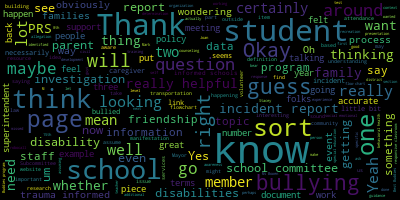

AI-generated transcript of Regular School Committee
English | español | português | 中国人 | kreyol ayisyen | tiếng việt | ខ្មែរ | русский | عربي | 한국인
Back to all transcripts
Heatmap of speakers
[Lungo-Koehn]: be a remote participation to the greatest extent possible. Specific information and the general guidelines for remote participation by members of the public and or parties with a right and a requirement to attend this meeting can be found on the City of Medford website at www.medfordma.org. For this meeting, members of the public who wish to listen or watch the meeting may do so by accessing the meeting link contained herein. No in-person attendance of members of the public will be permitted, but every effort will be made to ensure that the public can adequately access the proceedings in real time via technological means. In the event we aren't able to do so, despite best efforts, we will post on the City of Medford and Medford Community Media websites an audio or video recording transcript or other comprehensive record of proceedings as soon as possible after the meeting. The meeting can be viewed through Medford Community Media on Comcast Channel 22 and Verizon Channel 43 at 6 p.m. regular meeting of the Medford School Committee virtual information, 6 p.m. Since the meeting will be held remotely, participants can log or call in by using the following link or call-in number. One of the numbers is 1-929-205-6099. Enter meeting ID 920-2027-7672 when prompted. Additionally, comments or questions can be submitted during the meeting by emailing medfordsc at medford.k12.ma.us. Those submitting must include the following information, your first and last name, your Medford Street address, your question or comment. Member Van der Kloot, if you could please call the roll.
[Van der Kloot]: Certainly. Member Jenny Graham? Here. Member Kathy Kreatz? Here. Member Melanie McLaughlin? Here. Member Mia Mustone?
[Lungo-Koehn]: Mia? Hold on, let me try to unmute him. Mia? There you go. Oh, we still can't hear her even though she's unmuted.
[Van der Kloot]: Okay, thumbs up, Mia? Perfect. Member Paul Russo? Member Paulette Van der Kloot, present. Mayor Lungo-Koehn.
[Lungo-Koehn]: Present, seven present, zero absent. If we all may rise to salute the flag, please. I pledge allegiance to the flag of the United States of America, and to the republic for which it stands, one nation, under God, indivisible, with liberty and justice for all. First order of business, we have approval of the minutes of the regularly scheduled school committee meeting from November 16th, 2020.
[Van der Kloot]: Motion of approval.
[Lungo-Koehn]: Motion for approval by member Vanden Heuvel, seconded by member Kreatz, roll call.
[Van der Kloot]: Jenny Graham? Yes. Kathy Kreatz? Yes. She said yes. Okay, Melanie McLaughlin? Yes. Mia Mustone? Thumbs up. Paul Rousseau?
[Lungo-Koehn]: Yes.
[Van der Kloot]: Paulette Van der Kloot? Yes. Mayor Lungo-Koehn?
[Lungo-Koehn]: Yes, 70 affirm is there in the negative. Minutes are approved. Approval number three, approval of bills, transfer of funds and approval of payrolls.
[Van der Kloot]: Motion of approval.
[Lungo-Koehn]: Member Van der Kloot, seconded by? Second. Member Kretsen-Graham?
[Van der Kloot]: Okay. Jenny Graham? Yes. Kathy Kreatz. Yes. Mia McLaughlin. I'm sorry, Melanie McLaughlin. Yes. Mia Mustone. Thank you. Paul Russo.
[Unidentified]: Yes.
[Van der Kloot]: Paulette Vanderkloot. Yes. Mayor Lungo-Koehn.
[Lungo-Koehn]: Yes. Seven in the affirmative, zero in the negative. Paper passes. Number four, report of secretary.
[Van der Kloot]: There is none.
[Lungo-Koehn]: Number five, report of committees. First up, we have Communications Strategy and Stakeholder Engagement Subcommittee member Jenny Graham. Approval of minutes from 11-10-2020 and 12-1-2020 meetings. Member Graham. Thanks.
[Graham]: So on November 10th, the Communications Engagement and Strategic Planning Subcommittee met from 530 to 630, and we specifically discussed the practices around kindergarten orientation, both current and possible, I guess I'll say. And during that meeting, we talked a little bit about sort of our current process, and this has been added to the minutes And Susie did update everyone's folders, sorry, earlier today. The current process that we have operated under for a long time starts with registration in March, and then presentations called Bridges to Kindergarten in March and April, a visiting day in May, and then kindergarten screenings in September. We looked at that and we actually took a look at practices in our neighboring districts because, as you remember, this came up because we back in February hadn't started our orientation yet per the typical schedule. And in particular, the charter schools were already asking people to make decisions about enrollment. Um, so we spent this meeting sort of deep diving on, um, what various, um, communities around us and, um, including the charter schools are doing, um, based on information that was publicly available. Um, and in general, most, I'll say most are many communities and certainly, um, the charter schools who, um, take students from Medford. all get their process going quite early in the year. Some of them really early. One of the charter schools first lottery is on January 4th. So they are moving and grooving long before we have historically started our process. So we talked a little bit about that. We talked about some of the options that we might have. And we heard from some folks in the community around certainly like what a weird year this past year was, but also the sort of necessity that came out of it being that we now have online registration, which we have never had before. And that gives us sort of a unique opportunity to do something different. We did talk about ways to promote what we do in kindergarten, whether it's because of COVID and limiting, you know, the ability to gather people in person or just in general to be able to provide a deeper, richer content and collateral like out on the website and in the community so that when people are starting to sort of do their research and think about what is it that Medford public schools can offer that there's sort of answers to those common questions and we had a couple of community members join us and they spoke specifically about. Some of the things that that they saw and that they were interested in learning more about when they were in the early stages of the process. We also talked about how how we reach families. So we typically or historically have waited for families to come to us. And one of the things we talked about in the meeting and agreed on is that we would actually work with City Hall to do some outbound communication to families who have eligible students to make sure that they know about Medford Public Schools, that they know that we are excited to have their students join us, and really to start that communication process with outreach and outbound over and above sort of our typical tactics of reaching people through local preschools or through the Medford Family Network, which we would continue to want to do. Um, we did also talk about, um, sort of understanding the process and, um, feedback from the community as we, um, as we go through, as we go through this, um, this change. And I'll say sort of in summary, what we, what we landed on was, um, some revisions to our timeline, um, that we would start with our family mailing. And as well as with trying to create some sort of video that starts to socialize kindergarten for families in the month of December, so that's this month. And just to really outline the registration process, what to expect and how people can learn more about MPS without having to only gather their information from social media, friends, et cetera. So really making sure that we're trying to reach folks in an official capacity as well as through what is invaluable in terms of personal experience. We talked about also focusing in the month of December on outreaching to community resources like the MFN, as well as some of the local preschools to let them know that our registration timelines are changing. And then we talked about, you know, December and January doing some virtual cross school tours. And there were, we talked a lot about the videos that were pretty well received in the community this past spring because of COVID, but really saying, how can we create some video in the December, January timeframe that gives people an understanding of what our schools are all about and provides people access, you know, certainly this year, knowing that access will be somewhat limited. We also talked about tour nights being like TBD for this year, just because of COVID, at least for the time being, but that we put it sort of on the post-pandemic wishlist of things that we would want to do so that we have sort of a structured forum in a way for people to engage who want that and that we can move past the feedback that we've gotten from the community in the past where people are reaching out to ask for tours and aren't getting responses. And some of that could just be not sort of funneling those things to those requests to a consolidated place is ripe for error and for those things sort of getting dropped. We also talked about that we will open registration starting in January. So that's a big shift for us from what we have done in the past. And it will of course be online, which is amazing. That we would start Bridges to Kindergarten presentations in February and still plan sort of typical kindergarten visiting day in May, as we have always done, COVID dependent, and then continue with our kindergarten screenings in September for now. but really to try to change the timeline of the early parts of the registration process so that we are intentionally outbounding information to prospective families and we're giving them some vehicles to learn about us, whether COVID or not. And we are encouraging that registration process to get going. So that was our meeting on November the 10th. Motion to approve.
[Lungo-Koehn]: Motion to approve. Motion to approve by Member McLaughlin, seconded by Member Van der Kloot. Roll call.
[Van der Kloot]: Graham? Yes. Kreatz? Yes. McLaughlin? Yes. Mustone? Me, I see the thumbs up. Paul Rousseau? Yes. Van der Kloot, yes. Lungo-Koehn?
[Lungo-Koehn]: Yes. Zero negative minutes are approved for 11 10 2020. And then we also had a meeting last week on December 1st.
[Graham]: And in that meeting, we talked a bit about, we talked specifically about the technology and the structures that we have in place to ensure that we are able to communicate with our families and our communities. So we talked a fair bit about the various systems that the district uses in order to be able to communicate and some history around why we have had many platforms over the years. And the other thing we spent a fair bit of time talking about was the plans upcoming for really Medford Public Schools to sort of make a selection for a communication vehicle that is user friendly and can be widely deployed. And Dr. Cushing told us that that was sort of pre-COVID, it was on the roadmap for last summer, but that, you know, we made a decision and rightfully so to not disrupt our communication flows last summer amidst all the really important communication around COVID. but that that is something that they are looking to return to the docket in this upcoming summer so that we can make that transition. We also had a good number of folks from our PTOs join us, and we talked a bit about communication options that might include requirements and needs that the PTOs have, where they sort of have the same challenges that we do as they are trying to reach and build their communities, and they may or may not have a good directory of sorts to help support that. So we talked a bit about what those requirements might be. We talked a bit about how to make sure that however we pursue a new application that we think about what those requirements are. And we were able to kind of talk through them in an initial draft in the meeting. And we talked a bit about certainly a desire on my part, but I think on lots of people's parts that However, we allow or enable our PTOs to use our platforms to communicate that it is not something that is reliant on a principle to have the sort of bandwidth or capacity to be in the middle of that communication, which is often the reality of how we have to do things today in many, many cases. So we talked a lot about, you know, wanting to make sure that there were some like rules of engagement and things that, would be workable and that we would work together with that same group of individuals sort of as this unfolds to make sure that they have options as well to communicate with their respective communities. So there were a number of people from a number of PTO folks from various school buildings and there was definitely consensus around that. We also talked about communication platforms in a broader sense to include the ways that teachers interact and converse and communicate with their families. And there was feedback in the meeting for us to really think about around the notion that literally every year, your child, especially at the elementary level, to a new teacher, they may have new platforms or protocols. And so there's certainly a security step in all of those platforms, but then also a consistency step for families. There are districts that have a platform that they use. There are others that leave that up to the teachers. And so, I mean, I think the group in general definitely wanted to know sort of how the teachers were feeling about that, but there was a desire from the parent community for some consistency in that regard as well. So, that's a summary of our meeting on the 1st of December.
[Lungo-Koehn]: Great, thank you. Motion for approval? Motion to approve. Seconded by Member McLaughlin. Roll call. Yes.
[Van der Kloot]: Yes. Yes. Yes. Yes. Yes. Yes. Yes. Yes. Yes. Yes. Yes. Yes. Yes. Yes. Yes. Yes. Yes. Yes. Yes. Yes.
[McLaughlin]: Thank you. I want to thank my co-chairs, Paul Rousseau and Mia Mostow for the Behavioral Health and Special Education Subcommittee. We met, as you said, on the 19th Um, and we have identified, um, uh, this committee is a, is a, it has been a little bit tricky this year because it's behavioral health and special education, which are both very broad topics, as you can imagine, and very big topics. Um, but we have the attendance, uh, regular attendance of the director of guidance, um, Stacey Shulman and the director of pupil services, Joan Bowen, um, and then several constituents from the community and, um, ongoing parent involvement and family engagement specific to those two topics. We have identified trauma in trauma-informed schools as being our behavioral health topic of support for the year and thinking about ways to improve our school system around trauma informed schools. And right now we're really in this sort of collective research phase where we're meeting with each other, getting information and research and resources from community members and folks that are attending and having discussion around what's currently happening in our schools regarding trauma-informed schools and what we would like to see happen. Our goal is to probably in April of this year to have a presentation for the school committee with policy recommendations on those items. In the meantime, Stacey is working on trauma-informed practice with the school district around mindfulness and training about best practices in trauma-informed schools. And again, we're building research and resources for the community at large, teachers, staff, and family members. And then regarding special education, we're working on identifying ways in which we are building friendships for students with disabilities in our school to make it a priority, both for our our school committee, because we are, I think, representative of what we value and friendships are important in our schools. It's an important social emotional component and can be more difficult for students with disabilities so we're focusing specifically on fostering friendships in our both in our school programs that are wraparound services for example our morning programs are after school programs and our athletic programs. And out of school but community school based services so, and again we're collecting research and data right now on who's doing what and other districts, what we had acquired a friendship toolkit from an organization called the Arc of Massachusetts. which is a self-advocacy or advocacy organization that provides resources and support. So we are looking at that. We have a couple of parents that are very interested in exploring a Best Buddies program. We had formerly had a Best Buddies program in our schools. middle schools and so we're looking at piloting a best buddies program or something similar in our schools and we are looking at building a volunteer base for our recreation services among others for students who need it's again it could it could intersect with the friendship piece as well but it's for students who may need additional support say for example in recreation settings or you know, Metro Recreation is certainly looking for volunteers. And we know that there are siblings out there that could additionally use some support, siblings of students with disabilities who could use support, but also could be a really great frontline for potential volunteers. So we're excited about the work we're doing, and we'll continue with recommendations coming in the spring. And our next meeting is the 17th, of December at five o'clock, from five to 6.30. And if you find any of these topics interesting, we would welcome your attendance. We welcome everyone's attendance, but specifically if you're interested in trauma-informed schools and building friendships for students with disabilities, please join us on the 19th. Thanks.
[Lungo-Koehn]: Thank you, Member McLaughlin. Motion for approval by Member Ruseau, seconded by Member Van der Kloot. Roll call, please.
[Van der Kloot]: Graham? Yes. Pretz? Yes. McLaughlin? Yes. Ms. Stone? Yes. Russo? Yes. Vanderclute? Yes. Lungo-Koehn?
[Lungo-Koehn]: Yes. Seven in the affirmative, zero in the negative. Minutes are approved. And next up we have Curriculum Subcommittee member Paulette Vanderclute. Approval of minutes from 11-18-2020 meeting. Member van de Kloop.
[Van der Kloot]: Thank you. Yes, so we met on November 18. Present was myself, Jenny Graham. Mia could not make it, so Paul Rousseau attended in her place. We began with a presentation from Tanya Sullivan and Alex Lark, co-chairs of the Medford CPAC, and they made a presentation reminding us that they speak for 20% of Medford Public Schools students and that they've been advocating for a disability awareness program for many years. Also, Melanie McLaughlin also attended, and she was the previous head of the CPAC, and also was very active in this program. advocating for this program. Joan Bowen and Susanna Campbell presented the disability awareness in the classroom presentation. Susanna Campbell is presented an overview of the course that she ran last year and is going to now run again this January. The professional development is available on the Professional Development website and is now open for registration. It's open to all staff, not just teachers. The program is going to run Thursday afternoons from 3.15 to 5.15 in January and February via Zoom. The course includes the history of disabilities in the U.S., and U.S. legislation, ableism, belief in our society that not being disabled is the norm, disability etiquette, so teachers can model disability etiquette, and asking a person what they want, if they want assistance rather than stepping in, and the unique needs of students with various disabilities, and also tools to break down stereotypes. Key curricular concepts are positive representation of people with disabilities in content area lessons, universal design for learning helps all have better access, anti-ableism language practice into content area lessons, reframe misconceptions, building a more inclusive environment and creating a better community. The next steps, is to recruit is to have the PD course January and February of 2021 then recruit volunteers to pilot a disability awareness curriculum in February 2021 and then a pilot in classrooms, March to May 2021. This is not a one and done, and this is one of the most important things that really was stressed in the meeting. This disability awareness, we want it to be embedded into everyday instruction, so that it's not something that which simply just happens once, it's a, you know, get some fanfare, and then it's left behind. Rather, the concept and the awareness needs to be embedded into the curriculum so it is ongoing. That was a very important point. We talked about a book that one fifth grade teacher was using and the lesson plans that had come out of that. Last time, 48 teachers took the course and it's hoping that there will be as many this time. It's done on a volunteer basis. And the end result is creating curriculum units that can be shared amongst our staff. Again, we talked a little bit about why we weren't doing a specialized curriculum, but rather embedding it in. CPAC had done research on this in past years and there had been an attempt at the one school, but it ended up being a special event rather than having the long-term impact. Let's see. We're starting from the pilot and we're growing from there. And Susanna Campbell mentioned that we're taking a two-pronged course. One is about teaching students. The other part is teaching teachers to use universal design to help them become more knowledgeable about disabilities. We've asked that there would be a report and update at the end of the year, and that's been scheduled. And so we'll be reporting back to the committee about how many teachers signed up and took the course and how many volunteers we had and how we were able to implement this this year, this year being 2021 in the spring. Lastly, I just want to mention to you that the The next meeting is on December 10th, but that is this Thursday. And we're going to be looking at the math curriculum. We also wanted to convey our thanks both to the, particularly to Tanya Sullivan and Alex Lorick of the CPAC and to Susanna Campbell and Joan Bowen for all the work they did in giving the information for us for this subcommittee. That's it.
[McLaughlin]: Motion to approve.
[Lungo-Koehn]: Motion to approve by member Van der Kloot, seconded by member Kreatz.
[McLaughlin]: That was member McLaughlin, Mayor.
[Lungo-Koehn]: Member McLaughlin, seconded by member Kreatz. Yes, sorry, that's what I meant. Thank you. Roll call.
[Van der Kloot]: Graham?
[Lungo-Koehn]: Yes.
[Van der Kloot]: Kreatz? Yes. McLaughlin? Yes. Mustone? Yes. Rousseau?
[Ruseau]: Yes.
[Van der Kloot]: Van der Kloot, yes. Lungo-Koehn?
[Lungo-Koehn]: Yes. Seven in the affirmative, zero in the negative.
[Van der Kloot]: Yes. May I just ask, do we have a student representative tonight? I see a student on the call. Do you want to introduce yourself? Colin.
[s_2IiM5UIbM_SPEAKER_06]: Yeah. Hi there. I'm Colin Bailey. I'm a senior. And yeah, I'm just, it's an honor to be here. I'm very happy to work along with you. And yeah, I hope to make this the best that it can be.
[Van der Kloot]: Thank you so much for attending Colin.
[Lungo-Koehn]: Welcome. Welcome. It's an honor to have you. Let us know if you have any questions. Next up, we have committee of the whole special school committee meeting offered by myself, minutes from 11-24-2020, which was last week when we discussed the school metrics, COVID-19 school metrics. Motion for approval of the minutes.
[Van der Kloot]: Motion to approve.
[Lungo-Koehn]: Second. Seconded by Member Van der Kloot. Roll call.
[Van der Kloot]: Yes. Yes. Yes. Yes. Yes. Yes. Yes. Yes. Yes. Yes. Yes. Yes. Yes. Yes.
[Ruseau]: Yes.
[Van der Kloot]: Yes. Yes. Yes. Yes. Yes. Yes. Yes. Yes. Yes. Yes.
[Lungo-Koehn]: Yes. Those submitting must include the following information, your first and last name, your Method Street address, your question or comment. Member Ruseau, do we have any emails yet?
[Ruseau]: We do, thank you, Mayor. We have a request from Joanne McKay of Court Street in Medford who would like to speak or would like to make a statement on behalf of the Roberts Elementary School.
[Peter Cushing]: Okay.
[Ruseau]: I believe she is on.
[Peter Cushing]: If she could just raise her hand, that would make it easy to find so we can unmute.
[Ruseau]: find her, Peter?
[Lungo-Koehn]: Yeah, I'm trying to unmute now. Oh, sorry. Yeah, sometimes it's sticky. There you go. Ms. McKay, you should be unmuted now. Sure, can you hear me? Yes.
[Joanne McKay]: Okay, thank you very much for having me be able to speak tonight. So I just have a little statement on behalf of the Roberts School. I'm sorry if you can't hear me very well. It doesn't necessitate that I'm wearing a mask in my situation right now. So things have been changing rapidly at the Roberts School. So this is a letter that we wrote today. So it says, dear Dr. Edouard Vincent, Dr. Murphy, Mr. Murphy, Dr. Cushing, and Mrs. Galusi, we're writing this letter out of care and concern for our coworkers and students at the Roberts Elementary School. The recent rise in positive cases of COVID-19 and the need to quarantine teachers, paraprofessionals, and students has us deeply concerned. Currently, we have eight classroom teachers, four paraprofessionals, and three support staff teachers in quarantine. Some of the staff members have tested positive and are not just quarantined due to being close contacts. Almost all of those quarantined are from exposure at school. We just had 11 staff members return last week from quarantine due to exposure at school. We also have cohorts in quarantine as well as many individual students in various classrooms due to either testing positive or being exposed. We are unsure of how we can sustain educating our students at this rate. We are concerned that due to coverage, the cohorts are being cohorts are being exposed to many various people. We are concerned that support staff is not aware that they may have been a close contact and are in constant state of worry and anxiety in regards to whether or not they are close contacts. They are nervous about being in and out of many rooms. Despite the diligence of our custodial staff cleaning and disinfecting our buildings continuously and the adherence of the staff and students to state safety protocols, our numbers are rising at a rate that we find alarming. This is greatly affecting the mental health and well-being of the staff and the students. Many are reporting high anxiety and sleepless nights due to concerns for the safety of themselves and their family members. We willingly returned to school when we were asked to, and we are working harder than we have ever have to provide our students with a quality education in these uncertain times. In order for us to continue in this manner, we need to feel safe. And due to recent events, we do not feel safe. We respectfully ask that you have the Roberts Elementary move into a remote phase for a period of time to help stop the spread in our community and keep our faculty and students safe. Thank you for your attention to this matter.
[Lungo-Koehn]: Thank you, Ms. McKay.
[Unidentified]: Ms. Douglas.
[Charlene Douglas]: Thank you, Charlene Douglas, 414 High Street Method Mass. First and foremost, I want to give a shout out to Superintendent Dr. Edwin Vincent, Mr. Murphy, and the administrative staff for the hard work they have been doing to get us back into the schools, the testing that's in place. It has been a true privilege to have that testing so that we can keep track of what's happening within our schools. That being said, I want to speak tonight on behalf of the membership as the MTA president. So the membership and the MTA executive board are very concerned with the recent uptick of cases within the community and the impact this is having on the schools. Both the Roberts and the Brooks Elementary Schools were severely impacted today. with staffing issues and hybrid classes are now forced to go remote for the period of two weeks. The Roberts, as you heard, has eight classroom teachers, four paraprofessionals, and three support staff teachers in quarantine that have been tested positive or have been deemed close contact. The number of confirmed student positive cases to the best of our knowledge at this time at the Roberts is six. The Brooks Elementary had nine teachers and four other staff members that have tested positive or been deemed close contacts. The MTA knows of five positive student cases at the Brooks at this time. We are concerned as to how we can maintain the health and safety of the teachers, staff and students during this period of time. With the number of staffs impacted by the above situation, we are concerned by asking additional people outside the cohort to cover the in-person cohorts. with increased risk to the school and to the community. To demonstrate the uptick in new cases, I'm citing the state report dated December 3rd. Method reported having 254 cases in a 14-day period ending on December 1st. In the last seven days, Method has reported 295 new cases in seven days. We have doubled the numbers. We understand and really truly know that it is better and best to teach in person and students learn better. But due to this high risk and the uptick in cases in the community, as well as the justified concern of our staff about their health and wellbeing, we strongly believe that we should be engaging in remote instruction until after the winter break. We ask that you take this action for the overall safety and well-being of the staff and the students of the Medford Public Schools. Again, this is not an easy statement for me to read tonight because I too want all the students in, but we are frightened and we are scared and we have staff members coming down rapidly every day. Thank you for your time.
[Lungo-Koehn]: Thank you, Ms. Douglas. Member Van der Kloot. And I know we're getting to this topic with Ms. Toni Wray in probably 10 minutes, but maybe Vandaclute, you're on mute.
[Van der Kloot]: Always trying to shut me up some way. All right, so I just, just for the public, we're not, I'm not going to address this right now only because I think we have some reports coming and we certainly will have some questions.
[Lungo-Koehn]: Remember? So any other emails that you have right now?
[Ruseau]: No, Mayor. Thank you.
[Lungo-Koehn]: Thank you. Yeah, we'll get into that. We're gonna do the superintendent's update and comments, and then we're getting right to number two, which is COVID-19 public health update and testing.
[Van der Kloot]: Melanie has her hand up.
[Lungo-Koehn]: Member McLaughlin.
[McLaughlin]: Thank you, Mayor. I just wanted to thank Charlene and Miss McKay for their statements, and I'm assuming that we will circle back after the reports. Is that what you were saying, Member van de Kloot?
[Van der Kloot]: Yes.
[McLaughlin]: Okay. I just want to say thank you as well. Thank you.
[Lungo-Koehn]: Dr. Edouard-Vincent, Superintendent's updates and comments.
[Edouard-Vincent]: Yes, and I wanna say good evening to everyone and thank you, Ms. McKay and Ms. Charlene Douglas for sharing your thoughts and concerns with us. And I hope that after today's reports are presented, that it will provide additional peace of mind and know that we are all working together on behalf of the students. So I do wanna say that. Good evening, I have some remarks to share with everyone. So first it does give me great pleasure to welcome our two school committee representatives. I was muted. I tried to unmute before and it wasn't cooperating with me. So we have two students that will be participating with us, Colin Bailey, and also David Mai, who is from the vocational side, majoring in business marketing. And so I wasn't sure if both of them were online since I'm on a different device. Welcome, and I know this is an unusual kind of formal welcome, but I am excited to say that we do have two students. Colin from the comprehensive side of the school, Colin Bailey, who's a senior, and David Mai, who is on the vocational side of the house in the business marketing. So welcome to you both. And thank you for your student leadership on the school committee. I wanted to acknowledge that today, December 7th, is the anniversary of Pearl Harbor Day. The 79th anniversary is a day when Pearl Harbor survivors, their families and veterans from all over the world come together to honor and remember the 2,403 service members and civilians who were killed during that attack that took place at Pearl Harbor on December 7th, 1941. I would like us to just take, if possible, a brief moment of silence just to remember that generation who didn't hesitate at that point in time to answer the call to protect our freedoms. They put their lives on hold for the greater good. Thank you. Believe it or not, our band was scheduled to be in Honolulu this week. On Friday, on my calendar, I had my calendar alert pop up and it said, fly to Hawaii. And I too, You know, I'm an avid fan of our band, but I wanted to go to Hawaii to see them play and perform in the parade. But as you know, due to the virus, we're not able to travel. I know that it was a great, great disappointment for everyone, especially our band students who were practicing for so many years to be able to go and really display their talents. So, you know, we're sorry that this opportunity couldn't happen, but again, I just want to recognize you as well and knowing that you would have been there playing in their parade that was going to take place. But nonetheless, I want to put the band on everyone's radar for you to come out and please support our band. This past weekend, the Mustang Band parents hosted a tree and reef sale in the Medford High parking lot. If you missed it, they'll be there again this weekend from 10 a.m. to 4 p.m. on Saturday and Sunday. I want you to know I picked up my tree and wreaths this weekend and my six foot tree, which is right behind me, it's still settling in. So I haven't put the lights on yet, but it's a beautiful tree that's very full and very fragrant. So those of you who are getting Christmas trees, I encourage you to go out and support our band. Additionally, I wanted to share that a number of our PTOs are selling gift cards and school merchandise for the holidays. The Medford High School and the Medford Vocational Technical High School PTO, they currently have a fundraiser going on with the Pampered Chef and the Texas Roadhouse. The friends of Medford rowing, our crew students are also hosting a calendar raffle during the month of January. And it's $10 for a raffle ticket, $3 for 25 tickets. And you have an opportunity to win a gift card every day during the month of January. So if you're able to support our crew students that would be wonderful. The Brooks PTO is also holding its silent auction this week. I was fortunate to win when they did one of their auctions. So please support their PTO as well. The Columbus PTO is looking for gift card donations for their community. So Again, we appreciate all of these volunteers whose dedication and commitment to our school community continues even during COVID. So as we meet tonight, we do so with COVID cases rising, both here and throughout the state. I do realize that people may be tired of wearing masks, social distancing, and washing their hands, but we need to continue to remain vigilant. If not for you and your own family, let's do it for the kids in our community who want to continue to attend in-school learning. So please continue to work with us and take the proper and necessary precautions. We need to be in this together because divided, we will fall. So let's go Mustangs. Please keep the faith and we'll continue to push forward. This past week, The Medford Public Schools in collaboration with the City of Medford's Board of Health, Armstrong Ambulance, the Broad Institute, Tufts University, we began our student COVID testing program. Students are swabbed by healthcare professionals in elementary schools and they swab themselves at the secondary level. It is a PCR test that has been shown to have an extremely high accuracy rate. It's the same test that all staff, NPS staff are using. Again, please know that these tests don't hurt. I shared a little video last week. It truly is a painless experience. So I am encouraging families to sign up. If you have not signed consent forms, please do so. We really are shooting to have 100% participation from all students. Um, so we want testing to continue. That's our hope, um, in January of 21, but we are still looking at additional funding, but we will keep you informed. We're also grateful and thankful to nurse Toni Wray and all the school nurses who are overseeing this important program, as well as Marianne O'Connor and Medford's board of health, who are also assisting with the testing. So in order for the student testing to run smoothly and to minimize time away from instruction, I wanna thank members of our Mustang school community, administrative assistants, central administration staff, and members of the Medford Fire Department who assisted with the registration process. Everything we have been doing is important to keep our school hybrid option still functioning. All hands are needed on deck and it is gratifying to see so many people jumping in. I am pleased to announce that this Thursday, December 10th, our seniors are coming back to the high school. December 10th is cohort C, and on Monday, December 14th, cohort B. So I wanna say thank you to the seniors, to their families who showed incredible patience while we were working aggressively on our HVAC systems to make sure that we met the heightened air quality standards that were necessitated by this pandemic. So we know that the work is ongoing and we look forward to welcoming grades nine, 10, and 11 in the new year. So stay tuned, that will be coming. So as part of our re-entry for our grade 12 students, and given the known risks of opening school among older and more independent students, we will be offering free COVID-9 testing to all students and staff returning to Medford High School prior to their arrival. So Medford High School seniors who are in cohort C, that means you're coming to school on Thursday, You are asked to come to the high school tomorrow between 3 p.m. and 6 p.m. Again, tomorrow between 3 p.m. and 6 p.m., Tuesday, December 8th. Seniors who are waiting to come back, cohort C on Thursday, you need to come and take your test. Students that are returning, cohort B students who are returning on Monday, your testing day will be Friday, December 11th, this Friday afternoon, between 3 p.m. and 6 p.m. Again, in collaboration with the Broad Institute, the results come within 24 hours. You put your email address and it will be emailed to your parents. So there's a quick turnaround with the results. So please, 3 p.m. to 6 p.m., tomorrow for Cohort C students and Friday, December 11th for Cohort B students. It's very important and we look forward to seeing you tomorrow and Friday for testing and welcoming back Cohort C on Thursday. I wanna just say now a quick thank you again for collaboration from the Neighborhood Kitchen and the West Medford Community Center over the holiday break. They were really able to serve families that were in need and they were able to serve 107 free meals to Medford residents. So we just wanna extend a very special thank you to the Neighborhood Kitchen and the West Medford Community Center for their collaboration and just taking care of the community. Thank you for being honorary Mustangs. Just a reminder to parents and caregivers, you should have received a survey from your respective principal stating that the survey requests feedback from students about students' educational experiences during this first marking term. Please know that the surveys are due back tomorrow. It's our hope that parents and caregivers will be able to take the time to complete the survey. The survey will only assist us as we move forward with this unprecedented school year. If you did not receive the survey, please reach out to your school principal. I would also like to recognize that last week, students at the McGlynn Elementary School had the opportunity to engage with both Attorney General Maura Healey's office and the iRobot company. Thanks to our computer teacher, Ms. Elias, the students in Ms. Notaro's grade five class, they were able to work remotely along with iRobot on a project. Additionally, earlier in the week, Ms. Elias' class welcomed the Attorney General's Director of Community Engagement Division, Mr. Marconi Almeida Barros. He spoke with EL newcomer students about the importance of staying safe online, as well as how to spot and prevent online scams. He also discussed the work of the attorney general. The students engaged in conversations with Mr. Almeida Barros, who also was kind enough to share his journey as the first Latino to be elected as a school committee member in Everett. He told them how everything is possible if you work hard and do your best. So in this season of giving, Once again, our Medford Family Network is looking for help from the community. So we're asking you to help again. Our Medford Family Network, they are in need of people who might want to adopt a family, in need for the holidays, and donate a gift card to Target, Market Basket, Marshalls, or Kohl's. Those who might be able to assist in any way can contact Marie Cassidy at 781 393-2106. The MFN is a special jewel in our school community. And like most nonprofits, they have been unable to fundraise much during this pandemic, but the needs continue. And so we'd appreciate any support that you would like to provide to them. I also want the community to know that as we continue to have meetings and meetings are being added, please be advised that all school committee meetings, including our subcommittee meetings, that they've been posted to the school website, the school Facebook page, and the school blog. So I wanna say that COVID has affected many, many things. And one of the things that it also affected is Girl Scout cookies. We have a lot of members of our community that are Girl Scouts. And like everything else, cookie sales have been forced to go online. So for those of you in our community who might be interested, please go to our school blog for additional information on how to place an order. I also want you to know that CCSR, our Center for Citizenship and Social Responsibility, they're hosting a school supplies drive from now all the way until December 14th. Drop boxes are located at City Hall and all of our K-8 schools. They are collecting the following items, pencils, pens, notebooks, glue sticks, markers, crayons, pencil cases, dry erase boards, scissors, disposable masks, erasers, folders, and rulers. If you want to support the CCSR drive, please, you can drop those, go to the drop boxes at City Hall or at our K-8 schools. Lastly, I'd like to say that this Thursday, December 10th, is Hanukkah. And it begins on December 10th and it ends on December 18th. The miracle of Hanukkah is that only one vial of oil was found with just enough oil to illuminate the Holy Temple in Jerusalem for one day. Yet the oil lasted for eight full days. The word Hanukkah means dedication in Hebrew. Hanukkah is also called the Festival of Lights. To all our Jewish friends and neighbors, the Mustang community wishes you a most wonderful, safe, and healthy Hanukkah season. Thank you, and have a good evening.
[Ruseau]: Mayor.
[Lungo-Koehn]: Member Ruseau, then Member McLaughlin.
[Ruseau]: Thank you. We do have an email that came in, and it's, I think, fine. It makes sense to read it after the superintendent's comments. It's from Campbell Tacey at Lawler Road in Medford, who I believe is a student. Hello, I just wanted to make a comment and commend the school committee and the administration on finally giving high school seniors a return date for school. Despite what other citizens have shared today on the call, offering hybrid as an option has been proven safe by the data. As someone with a passion for science, I appreciate an administration that is willing to listen to science and the data and get kids back in school. Thank you so much for your months of work. And on behalf of my fellow seniors, we are so incredibly excited to be able to attend school on Thursday. Thank you for all you've done.
[Lungo-Koehn]: Thank you. Member Ruseau, appreciate that. Member McLaughlin.
[McLaughlin]: Thank you, Mayor. Thank you, Superintendent, for the update. And thank you for coordinating testing for our seniors to come back to school. I think that's really important. It's really great to see that happening. I did want to ask, is there going to be a robo-call since there's such quick turnaround for Cohort B, that it's three o'clock tomorrow, and we want to make sure that everybody gets notice and information on getting the test. And then the other question is, for those, what happens if students don't get the test or don't take the test?
[Edouard-Vincent]: Mr., the first, the first ask about the robocall, Mr. DeLava will be right on top of that one. So that can definitely happen for tomorrow. Um, he can probably get one, a phone call out tonight. So your phone may ring Ms. McLaughlin. Uh, he can get one out tonight and we can resend it again tomorrow from three to six. And I hope, um, with the seniors as they know that their return date, he's been communicating with them quite frequently, but we can definitely do the verbal call out tonight for tomorrow and another one tomorrow as a reminder and the same for Friday's testing. So we can definitely do that. In terms of our goal is to get 100%. We don't quite yet have 100% as the forms were coming in, The form is a very simple form, the consent forms that the students would need to bring with them. That form is a very simple form. You just need to provide an email. so that the results can go to that email and emergency contact. But once that's completed and they come in, it's a very, very quick, painless process. So that was part of why I think some people had a lot of anxiety and worry that it was the very painful test and it's not painful at all. And the seniors, of course, they're old enough you know, they'll be able to self-administer and it's a very accurate test. So we are hoping to get 100%. I just, again, like you said, maybe if someone's phone number changed or I don't know if the family email might have changed. So I'm not sure how close we will be able to get, but by Wednesday, we should have an idea of how many tests were given and the results, and we will plan accordingly or move accordingly from the data that we receive.
[McLaughlin]: Thank you and as a follow-up update to that, can you let school committee members know what the response was for the testing? So just so that we have an idea, number one, and then number two, if there's a student or a family that has difficulty because of transportation, do we have any options? So for example, a student that just, their family does not have transportation and maybe public transportation is not an option, I don't know. I'm just thinking about those sort of, outliers that might need assistance. I know that there are groups certainly in Medford and I know that there are likely people, you know, that are willing to, you know, volunteer. to help with transportation if needed. So I just want us to, I'm wondering if there's any opportunity to address that for our students, either in the robocall or for folks that might need assistance getting to the school. Because again, I think Friday's a little bit different because people can plan ahead, but for tomorrow, if people are working and there's a senior who doesn't drive and maybe doesn't have access, how are we thinking about them?
[Edouard-Vincent]: I would say if we, with tomorrow being Tuesday, I know that Mr. DeLeva has been sending communications to let the seniors know, but I don't have that information on, you know, is it 10 students that have difficulty? Is it like a manageable number or is it a number that is, you know, a significant number. I think everyone understands the importance of keeping the entire community safe. And so it's critically, critically important for our seniors, as we're going to be having significantly larger numbers of students come back, for them to try their best to come to school to participate in the testing, because Tuesday is the only option. that we do have for Thursday's start. So I would suggest that they reach out to Mr. DeLeva, send an email, try to communicate to us so we could see if there's something else that we could do for the students that might not be able to get to the high school for testing.
[McLaughlin]: Thank you, Superintendent. May I respectfully request that that's included in the robocall, so that if there's translation of the robocall, what have you, that people are all getting this information, so that it's a resource so that folks do know where they can go if there's an issue. Okay. Thank you.
[Edouard-Vincent]: You're welcome.
[Lungo-Koehn]: Thank you.
[Ruseau]: Mayor?
[Lungo-Koehn]: Rosa?
[Ruseau]: Yes, there's another email, and it feels appropriate right now. It's from Irina Shumway, Walgreens Street, and she is asking, can we please get an update for return to school for other grades at the high school, if that's available?
[Lungo-Koehn]: I think you mentioned that, Madam Superintendent, but if you wanna just reiterate the official dates for the students?
[Ruseau]: For the other grades.
[Edouard-Vincent]: So the, oh, the other grades at the high school you're saying. So the other grades at the high school we would be staggering them in in the new year so that would be in January. So, with, with the calendar, the seniors coming in on the, the 10th and the 14th. The seniors will be in school because the following week, the 21st and 22nd, Wednesday is a non-instructional day. So it ends up cohort C will have two days, this week and the following week. Cohort B will have the 14th and the 15th. and the 21st and the 22nd. So for the new year, so we have not disclosed what the dates are, but the continued staggered hybrid would be in the new year. As we continue to get everything lined up at the high school, it would be early January for 11th grade to come and then 10th and 9th grades to come to the high school. So we will definitely give additional information in our weekly communications as we know the spaces are available. Great, thank you.
[Lungo-Koehn]: Next up, we have a number two COVID-19 public health update and testing update report, Ms. Toni Ray.
[Wray]: Good evening. I'm going to be providing some information from Marianne O'Connor, who was not able to be here tonight. So within the city, we are averaging 51 positive COVID cases a day. Our percent positivity rate is 1.42, and our incidence rate is 29.9%. And that is increasing in respect to and also in respect with what the state, the activity around the state. What we know is that most of this is community transmission. It is not transmission in the school. And that has been due to Thanksgiving and holiday and community activities. Here at the school, I'd like to acknowledge the firefighters who came and helped us with the testing last week, as well as Dr. Patrick Sabia, our school physician, who came and suited up at the Roberts Elementary School and helped us swab students. And also the school nurses for their unwavering support in providing contact tracing and COVID testing layered on top of their normal duties. So at school, we are moving our testing to twice a week. Students will be tested once a week and twice a week testing is available for the staff. This past week's testing, we found a total of seven positive cases that were contact traced back to the holiday activities. We know we are providing layers of protection for our school community staff and staff. the mitigation strategies of face masks, face shields, desk shields, and social distancing, our alpha med screening, our bi-weekly testing, and upcoming, which we'll talk about later, will be our BinaxNOW point of care testing. We have been able to provide early identification and quarantine of both positive cases and close contacts. It has prevented the in-school transmission. And since September, we have had no in-school transmission that has been discovered through contact tracing. As you see on your screen, these are the numbers we've been following, the data of positive cases. Again, it is reflective of the activity that has been seen in the greater Boston area and including our community.
[Lungo-Koehn]: Thank you, Ms. Wray.
[Wray]: Thank you.
[Ruseau]: Mayor.
[Lungo-Koehn]: Member Ruseau.
[Ruseau]: Thank you. Thank you for the report. Ms. Wray, how many close contacts, are we keeping track of how many close contacts we have identified for each positive?
[Wray]: Yes, we do. I don't have that information at my fingertips right now, but I can pull that up.
[Ruseau]: Thank you. That would be excellent to have. And I guess my sort of corollary question there is, are any of our positives ever having a close contact count of zero?
[Wray]: Yes.
[Ruseau]: That they've been into a building and we're saying that the close contacts is zero?
[Wray]: Yes. And that speaks to the mitigation efforts that the teachers are providing in the classroom. And we've had some very creative teachers. At one of the schools, teachers report that in order to maintain the distancing, when they go to help students with specific parts of their lessons, they're using a pointer so that they can maintain the distance and yet point on the student's paper to the area that they wanna discuss with the student. I thought that was a very creative way of maintaining distance, but also providing extra support to the student.
[Ruseau]: Thank you. When you do get those numbers, could you get them by grade level? I'm just having a hard time imagining, you know, a kindergartener, a first grade teacher having zero close contacts, unless kindergartners and first graders are different than when I was that young. So, I mean, it would just be helpful to not just have like how many, of our how many close contacts, but for the ones that have zero close contacts in particular, I'd like to know more. I mean, I feel like that requires a level of adherence that sounds more like a surgical suite than it does in elementary school. So I'm a little surprised that there's zero for anybody. So if you can provide that, that would be great. And then my other question is, so cohort A students that are, sorry. Did you want to? No, no, go ahead. Sorry. That's okay. The cohort A students are, of course, mixing with the cohort B and the cohort C students, because that's the way it works. So when a cohort A student is positive, are we contact tracing to both cohort B and C?
[Wray]: We are. We're contact tracing everywhere within the school environment, including the bus, lunchroom, or other specials class and other days of attendance. Yes.
[Ruseau]: Thank you. And then that makes sense. I was just confirming. And then my other question was around our protocols on cleaning. I don't remember every graphic detail, unfortunately, of our plans. Um, you know, we were going to clean between classes coming into a room. And so I'm just thinking, like, if a third grade goes to the art room. And then they go back to their room and then The next period arrives and that third grade another third grade class has to go to that same art room, I mean I think it's three or four or five minutes between. classes, how is the classroom getting cleaned. Between groups of students.
[Wray]: John McLaughlin and his custodians have the foggers available. There's also spray cleaning solutions and paper towels. We've bought alcohol wipes for technology devices. And we really encourage teachers and students to be washing their hands. Soap and water is preferred, but if soap and water is not available, we have added additional hand sanitizer to the buildings. And that's something John McLaughlin would be able to address their cleaning schedules far better than I could.
[Murphy]: Mr. Murphy. Thank you. There are additional rounds of sanitation that are taking place between classes and when classrooms are vacated. And that's a norm that you'll see in each school community. There are instances, particularly at the secondary level, where the exchange of classes is so rapid that there isn't a full fogging of that class, but we try to minimize that as much as possible to be able to meet all the protocols that Ms. Ray was just speaking to. I think that The general framework that was developed with regard to the frequency of the fogging is being adhered to. There may be some instances in which it's not realistic to have the amount of fogging and also have the time for the substance that's being used, which is a non-toxic substance, as we've spoken about before, to settle in and not generally you don't want to be using it while there are actually people in the room. So it's a narrow window of time in many instances.
[Lungo-Koehn]: Thank you, Ms. Murphy. If I may just ask for a quick elaboration, then I'm going to call on member Kreatz. Tony, I know we have the teachers spoke earlier, very nervous. If you could explain some of the work you did over the weekend with the team with regards to how you contact trace and how we also are being extra cautious when it comes to especially the lower grades, even if it's questionable, how we handle that this weekend, just to give some reassurance to those who are watching, those sending their kids to school, and obviously those that are teaching our students.
[Wray]: Okay, so this weekend we centered our contact tracing around seven positive cases. Um, the contact tracing phone calls were done by four different nurses. Um, uh, in addition to myself, um, Contact tracing interviews do take time, and we had some completed by the middle, starting in the morning by about 8.30. We had some completed early in the afternoon. Others continued through the later afternoon. Upon obtaining our information, I collaborated with the assistant superintendents to share data. We also had a team meeting that Mayor Blanco-Coyne was on, the superintendent, and we discussed the health metrics and how our data fit into the health metrics. We examined all the options within the framework of the health metrics and made our appropriate decisions. All families were notified though early in the day by the school nurses. Thank you very much. Member Kreatz?
[Kreatz]: Thank you very much. Thank you very much for the update, Ms. Ray. I just had a quick question. It was follow up to the response that you gave to Mr. Russo. When you do the contact tracing, does it also, you mentioned the bus, the lunch, cafeteria, does it include, when they're out at recess, does that incorporate the contact tracing as well?
[Wray]: We do ask the teachers about the activities of the classroom, including recess. Recess poses a little bit different of a situation because the students are outside, but we do take all of that into consideration. We are interested in who the positive child has contact with and is palling around with.
[Kreatz]: I know I got just a couple of, you know, just brief messages, just asking once again, and I looked it up, and could you define what a close contact is? Maybe if you could, you know, define what a close contact is again this evening, just as a refresher? Would you mind doing that? Thank you.
[Wray]: So a close contact defined by the Department of Public Health is somebody who has cared for a COVID positive person, or those who have been within six feet for greater than 15 minutes over the course, in our instance, would be over the course of the school day.
[Lungo-Koehn]: Thank you very much. Thank you. Member Van der Kloot?
[Van der Kloot]: Yes, thank you. I just want to be clear on making sure that I understand the teacher's statement and the information that, Tony, you're supplying. Up to this point, my understanding was that there was only one in-school transmission. Do we have any more than that at this point?
[Wray]: No, we do not. We only had one. All of the cases have been from community transmission.
[Van der Kloot]: But we've heard that there's a large number of teachers out at the Roberts in particular. That's because they are quarantining?
[Wray]: Yes. Yes. So they were determined to be close contacts. to a positive case. And some classrooms, because of the nature of having a teacher and maybe two paras, you're increasing the number of staff that is exposed, whether it be to a student or a staff member.
[Van der Kloot]: So a positive case that was in school, is that correct?
[Wray]: Yes, that came to schools. Because remember, some of our identification of positive cases has been through our school testing. People are feeling minimally ill and are coming to work, or they're asymptomatic and they're coming to work, and we are picking them up with our school testing.
[Van der Kloot]: we are not seeing in-school transmission. If I understand it correctly, what you're saying is that because of the testing and our ability to pick up cases, we are getting to those students and faculty members before they've actually become positive. Is that correct?
[Wray]: No, we're getting to them before they're feeling illness, many of them illness symptoms. They may be positive, but they may not be feeling very ill where they end up deciding to stay home. So we're picking them up very early in their course.
[Van der Kloot]: Right. I mean, I certainly understand the, you know, when all of a sudden we hear that there's a greater number of teachers who are on quarantine. I certainly understand. And I think all of us feel this right now, this anxiety as we see the case number get higher and higher throughout not only Massachusetts, but the country. And, you know, sort of it's very unsettling. But what you're saying is so far the data says that we're doing okay.
[Wray]: Yes, and when we're putting people out to quarantine, we are not seeing positive cases within that quarantined group. at any rate. So we're feeling like we're really identifying people, we're keeping them out when they've been exposed, and that has helped prevent positive illness.
[Van der Kloot]: Now, by no means am I dismissing the anxiety attached to being told you should quarantine or whatever. I mean, I certainly understand that that is an important piece of what our staff and teachers are conveying to us is that they're nervous about it. But what you're saying right now is there's really been no change in the data, which would suggest that we need to do something different in terms of having students come to school. Is that correct?
[Wray]: So what I'm saying is we have looked at every situation in the case of, you know, if we feel like we need to close a classroom, we have done that. But overall, our schools are very safe. We are not seeing the transmission within the school buildings. Transmission has been community-based. People gathered together for the Thanksgiving holiday. People traveled. This was all, you know, in opposition to what the Department of Public Health recommendations were. And now, a week later, we are seeing the results of those activities, of people being together within their household, come in company of people who are not, they're not living with in their home. And that's when we get the community spread.
[Van der Kloot]: I guess then the next question really goes to the superintendent. When we see the number of staff getting higher because they're on quarantine, do we have enough? And I know that there's been an incredible effort to cover classes and that the administrative people and others have just really stepped up and covered. But when we see what's going on at the Roberts right now with a certain level of teachers being out, are we able to cover the classrooms? Is it still working?
[Edouard-Vincent]: Yes, so I did speak with Principal Johnson today as well. And the number of staff that is quarantining right now, although the number is high, we're not talking total homerooms. So we do have staff in different roles, different supporting roles. So some people may be an enrichment or supplemental teacher. But in terms of total homeroom teachers right now that are quarantined, we had five out. One will be back on Thursday. Another one is coming back on Friday. So there is a lot of management that's happening. I think one of the challenges that happened today at at the school when I did speak with the principal was that they did have alternative coverage, but natural things happen where someone may just, you know, wake up with a migraine and not feel well in the morning. And so there was an additional, you know, person who either requested an absent day or may have had a personal day. But In terms of right now, we are watching, we are closely watching the numbers of staff that are out. We're also paying attention to what roles. So at this point in time, there were a significant amount of adults that were not in the building today. I don't expect that number to be as high tomorrow. but we have to look at the entire school. There are 18 general education classrooms and the Roberts has five specialized classrooms. So for a total of 23 classrooms in the entire school homerooms, and of those 23, there were five homeroom based teachers that we're not in. So it's not a number, we would love to see the number zero, but we are working with that number. So at this point in time, we take the questions and the concerns that were presented earlier, we do take it seriously, but we are working with the instructional leaders of the building and looking at the structure and looking at where are the homerooms. So, If, for example, you know, not that I want anyone to, you know, be out on quarantine but if an art teacher or wasn't in. students can still participate in the instructional day. It's not ideal to not have the teacher not present, but it would not be a homeroom teacher if that makes sense in terms of how the school day functions and the instruction that students are receiving. So we're looking at all of those factors in terms of can the school run? And if in fact it were to be at a point where that wasn't able to happen, then we would definitely communicate with the school committee and communicate with the school community to let them know, this is the situation that we are in right now. This is the amount of staff that is quarantining or whatever the case may be. And we would look at other options at that point in time. Thank you.
[Lungo-Koehn]: Member Kreatz.
[Kreatz]: I just had one more follow-up question. So if a person, you know, kind of thinks that they were a close contact, but they weren't contacted, what should that person do? Should they get in touch with Ms. Ray or Marian O'Connor or the principal? How would that, how would something like that happen, work out?
[Lungo-Koehn]: You would call Ms. Ray or the school nurse, or you always call the Board of Health, but do not contact your teacher call the school nurse or Ms. Ray. Okay, thank you. Any questions? And I just wanna give a shout out to put this in perspective a little bit. I know nobody wants to see any cases among our staff or among our students, but the positive thing that we have here in Medford that a lot of communities don't have some of whom are fully remote, some are in the hybrid or week on, week off, like for instance, Reading, we are able to provide, even if it is just for the month of December so far, we are able to provide our students testing and we're able to catch these cases so that instead of being in the whole week, we catch them as soon as we can, since our students are getting tested every week and we're able It's just an extra layer of protection that we have here in Medford. And this could not be possible without the team that you're looking at as far as the administration of the school and the board of health. When Tufts and Broad and mayor's office and school admin got on a call and we said yes, this sounds like a great idea. When we got that follow-up email, how much staff and how much PPE this was going to take, I thought there is no way we can do this, but your school admin has really come together. We need an additional, I think Tony can correct me if I'm wrong, but 22 personnel every Tuesday and every Friday to administer testing within each school, the proper and appropriate way. And to do that is really, for me, I wasn't involved in the PPE or the, I don't do the testing, but the school admin came together and made that happen with our board of health. And it's something that we have here in Medford. I'm very proud of and very happy that we're able to keep our schools in session, even if it's two days a week, and keep our teachers as safe as possible, as well as our students. So thank you, Tony.
[Wray]: I have also a quick announcement to add. We recently signed an affiliation agreement with Northeastern University School of Nursing. And come January, we will be providing them with a clinical placement site, and they will be providing us with 24 student nurses. six clinical instructors. So we're very appreciative of Northeastern's willingness to partner with us and also understand that we are providing them with an outstanding public health community practical experience for clinical. So that's very exciting. That's great. Thank you. Mr. Murphy?
[Murphy]: Mayor, I just wanted to add, I know you, I think, both you and the superintendent referenced the support we've received from Tufts University as part of this partnership, but I don't think we can adequately express our gratitude for the time and energy that the Tufts personnel have put into making this program a success. I mean, there are Tufts personnel and we sort of jokingly have said to them in the past that we don't want to thank them too much because we don't want their supervisors at Tufts to know just how much time they're spending supporting our work, but between Chris Sador and his staff, Karen and Alex, who essentially just moved into the Medford Bowick schools and helped us to stand up these testing programs and you know, as I said, Miss Ray could attest to this as well, but we're spending an enormous amount of time with them and it's valuable time that has made this this program a success so far. So we're grateful to them. And, you know, frankly, we'll be back on the phone with them right after this meeting, and then we'll be working with them throughout tomorrow and the rest of the week and hopefully for the foreseeable future.
[Unidentified]: Thank you, Mr. Murphy. Member Graham.
[Graham]: There it is, sorry. I did want to say thank you to all the people that are working hard to make all of this testing available. I know that sort of the numbers make it feel ugly because the testing is revealing to us, you know, where these cases are at and but I think it's so important and it is important that we are identifying folks as early as we possibly can so that we can contain the spread. So I'm hopeful that we can find a way to continue this testing come January. So I know for right now, it's only December, but perhaps at the next meeting, we can talk about the real need for this to be able to continue and figure out how we find a way to do that. Because I think that's critically important think the vaccine news is good, but it's not great. So, um, we're going to need this just as much in January as we do right now. Um, the other thing I wanted to mention is that I popped out to the dashboard, um, and it has not been updated, especially, and in particular, um, section three. And the other thing that I was thinking about as I was listening to the teachers, um, earlier and to this conversation is that. there are clear, like there are differences between people who have tested positive and people who have been asked to quarantine because they are close contact. And the chart that Tony showed earlier tells us who tested positive, but it does not paint a picture at all of who is a close contact and who is having to quarantine. So I was going to ask that that close contact number quarantine be put on this chart spreadsheet, but perhaps maybe it belongs on the dashboard instead in the like school specific conditions. And maybe that is the appropriate place for it. I don't actually care where it goes, but I do think it's critically important that it goes somewhere and that it's maintained on a weekly basis. Along with this spreadsheet so just last night somebody was asking where they could find the spreadsheet and was it updated and I do think the the spreadsheet should be posted on a weekly basis at minimum on our website. so that people can find it and that section three of the dashboard, which we approved last week, be maintained as well. So I think if we can get to that level of specificity with some of the data that we are sharing, I think it will help the community lend clarity because I will admit that as I listened to all of this information I was like one person said 15 and one person said 10 and then the same person said seven and so which number is it and maybe all of those numbers are true in some regard, but it's very very difficult to sort of rationalize all of that as it's being spoken so. Um, I think for those who aren't tuning into this meeting on a regular basis and for people who just on a regular basis really want to know where the school community is at so they can make decisions for their families. Um, I, I think that this information needs to be publicly available and I can put that in a motion if you would like, but, um, and my colleagues can vote on it, but I would like to see us move forward with that data on a weekly basis.
[Lungo-Koehn]: Sure. Thank you, miss Ray.
[Wray]: Thank you, Jenny, for your thoughts. I do want to mention that the quarantine list will not necessarily reflect only those who have been quarantined as close contacts within school. A majority of those people that are quarantined are quarantined because of a close contact within their own household or within their community. So there is a blurring of that.
[Graham]: Yeah, I am more interested in, I guess, and I'm open to feedback on this, but I am more interested in those folks who would normally come to our school buildings who are not coming to the school buildings because they have been identified as a close contact for some reason or another. How many of those are there? So if there are 10 staff who have been identified in some capacity as a close contact and are being asked to quarantine, I wanna see the number 10.
[Wray]: So you wanna see within the school environment. Correct. Okay, that's a whole different piece of information. Okay.
[Graham]: Yeah. And again, I think, you know, I've had several people reach out to me who their children are going to school and they like going to school and they are happy about going to school. But as parents, we often make decisions that our kids may or may not love, right? And we do that with whatever information the best that we have and we do, you know, we do what we can. And so this, you know, there's, there were several parents last night in particular who were saying, where's the data so I can go look at it so I can determine whether I feel like this still makes sense for my family. And I couldn't point them anywhere. So I would like to be able to say that this stuff is available somewhere on a regular basis.
[Ruseau]: Mayor, we have several emails if everybody else has done.
[Murphy]: I don't know that there's a need for a motion. I think it's clear what the request is, and provided that it's data that we can, um. We can collect. I think we want to publish as much data and be as transparent as possible. The one caveat I wanted to add to that I was thinking as Mr. Graham was referencing what, um. various parents or other constituents have asked about and sort of looking to see what data can they look at in order to draw conclusions for their own family and the rapidity with which this data is coming in and changing and the legitimate limitations on the district's capacity is putting us in a position frequently I find where there's capacity to either respond to the situation on the ground to make sure that the people that need the information have it and can make appropriate decisions based on that for safety purposes. And then we report and publish as quickly as possible. So I don't think there'll be any hesitancy on our part to collect because we need to and publish information, but the prioritization and I know the committee would agree, has to be on making sure that we're responding to situations and communicating to those directly affected. And the volume being what it's been in recent weeks, coupled with the challenge of just operating the district and making sure that there's coverage in each school where it needs to be, and then the execution of the testing program that we have, is going to put us in a position where I don't want families to think that any of this information is guaranteed to be all of the information they need to draw a conclusion with regard to their family. It may well be the case that some metrics or some spreadsheets aren't updated until a reasonable period of time in which we know we have all the information and we know what the universe of of data is, and we've been able to fulfill all of the other responsibilities that are associated with the events that lead to that data. So I think the message should be, while we will publish everything we have and will continue to be as transparent as we have, as we can be, if you are a close contact, if you need to take action to keep your child and your family safe with regard to quarantining, isolating, or what have you, you'll be called by the Board of Health or their representatives, likely in the Health Services Department. And all of the other information that is published via the website or anywhere else will be useful so people that can sort of understand the global situation. But in terms of decisions within households, that's information that we have to continue to on a case-by-case basis, make those communications known, because we just do not have the capacity to update all of the various data streams in real time, such that it can be reliable for parents to make those types of decisions. So I know that's a convoluted way of saying that we're going to continue to publish and be as transparent as possible, but that publishing responsibility will always be secondary to our responsibility to make sure that the people within the school that are affected by potential exposure are being notified with the information that they need as a family or as a parent.
[Graham]: So I think I'm just trying to understand what that tactically means. So does that mean we can commit to publishing once a week, which we've, by the way, already done? Does that, I mean, I think ideally we would be able to publish more than one time a week, maybe twice since we have two cohorts that are coming and going. If that's not reasonable, I both understand and am completely frustrated that we are so thin as a district that we can't provide this kind of information to families. So I don't think any of us wants to or is or can assume that every family has the same risk situation that leads them to say I have complete trust I'm just going to let somebody else take the wheel and they'll call me if I need to do something. Not every family is in that position and not every family wants to be. And I think that as challenging as this is, certainly those getting calls need to do what we're asking them to do, but there's a whole slew of people who hear this swirl and don't know what to make of it. And I would rather see us commit to publishing data couple times a week, then getting to the point, which I think is coming, where the administration gets bogged down with questions from individual parents, how many, how many, how much, how many, that is going to actually take more time than if we just said, we're going to publish this data twice a week, here's where you can find it, go out and look and it'll be there. because I think that's taxing on our system as well. So I'm trying to avoid that, but I just want people to be able to clearly say to people, like, when can they reasonably expect to see this stuff?
[Murphy]: So may I respond?
[Lungo-Koehn]: Of course, Mr. Murphy.
[Murphy]: Thank you, Mayor. I think that's, again, totally reasonable point. I think that, and my concern is that, and I think it's a shared one, We all want to publish the information, but we want to publish the information in a fashion that can be reliable, right? And I think the weekly publication that we're currently adhering to, obviously the more data that we need to collect and process, the more challenging that gets. I think, and I'll defer to Ms. Wright, but I would also invite our team to maybe collaborate and discuss this before we stake out a position with regard to weekly versus twice a week weekly because I think I think that requires some conversation. I think the if the northeastern the northeastern agreement which is now in place, which contemplates the continuation of the expanded testing, which, again, we're still details that have to be worked out there, major ones, including the funding, but we're optimistic that we're gonna get to a place where the reason we're building our testing muscle right now, the reason we're pushing our capacity is so that we're in a place to be able to do this as efficiently as possible going forward. And when that support comes in through that affiliation agreement, we will generally have more capacity to be able to respond. And at that point, we may be able to commit a different publication schedule of some kind. But even if and when that happens, the most accurate information will be the phone calls that get made through the Board of Health through the processes that the state and the city have developed. I think Ms. Graham's point is well taken that we don't just wanna flood the switchboard with calls from families that are concerned because the information on the website doesn't appear to have been updated in the last 24 hours. And I think that's fair, but I think we will have to one, look through other systems in terms of keeping people updated at the school building level. And frankly, if there's people that are concerned because of the particular susceptibility that may be present within their home, I think those families should be in constant contact with the school nurse. And they shouldn't worry about the switchboard getting flooded, because we always have time to respond to families. The school nursing staff, the school principals, and other building staff are doing it on a daily and hourly basis. I am certain that somewhere in Medford right now, there's someone from one of our eight school communities speaking with a family. primetime hours for that, but it's a guarantee that that's happening right now, whether it's via email, via phone, via text or what have you. So they shouldn't hesitate to call and pose those questions because that is in many respects why our building staff are there, to be able to answer those questions, give them the most relevant and updated information for their family. And then we will continue to publish the broader information for the community at large. But those phone calls, nothing is going to replace those phone calls, I don't think, in this particular situation.
[Graham]: Yeah, and if I could make a suggestion, if we are going to stick with publishing once a week, I might suggest that that publication happened on Monday because you're publishing those numbers to this group every other Monday anyway. The original reason those numbers published on Thursday is because the state gave us data on Wednesday and at the time we cared about what that data said as a marker for what we would do next and none of that applies anymore. So the fact that the dashboard is published on Thursday is arbitrary and I would suggest that if you're going to publish once a week you do it on Monday because there's multiple uses and you have, you know, the full testing that comes in from Thursday, Friday, that's totally up to you all. I think publishing twice a week makes a lot of sense. And if we have to wait to get to twice a week until Northeastern is on board, whatever that's all about, I think that's reasonable. But I think in the meantime, we do need to commit to what we have already committed to, which is publishing on a weekly basis. And I would like to see this other information added to that publication.
[Murphy]: Yeah, if there's not a variable that I'm not thinking of, moving it to Monday, I can think of several reasons that that would be advantageous. So that would make sense to me, but I think we'll, if it's okay with the committee, discuss this amongst our team over the next day or two, and then see how we can revise some of those systems to make sure the information is more readily accessible.
[Lungo-Koehn]: Thank you. Ms.
[Murphy]: Galusi.
[Galusi]: Yeah, I just want to say I do have just a little bit of concern though in terms of the close contact information because there are there are in every building scenarios and more than one situation where the close contact information has nothing to do with Medford public schools. and contact with a positive person within Medford public schools. People are quarantining as well from being close contacts to family members at home, or in their hometown districts and that would skew the information that parents you know, are gonna be going to look at to help make their decisions. And so I'm a little concerned using the close contact information. With that being said, I think that that's the difficulty right now in some of the, you know, concerns that people are bringing up with coverage issues, because that's the kind of umbrella or domino effect that is occurring right now, which the positive rates might be a little low, but the close coverages are a little high. So I just needed to say that because the numbers won't be completely valid unless we're just reporting on close contacts that are in relationship to Metro Public Schools.
[Lungo-Koehn]: Yeah, maybe the admin can put their heads together in the next couple of days and give us an email by the end of the week on how best to report this out, this data out to the community by Monday.
[Edouard-Vincent]: Yes. That is fair. Okay. That is fair. Thank you. Member Ruseau?
[Ruseau]: Thank you. I just wanted to respond briefly to miss Lucy's point. I think there's like an elephant in the room and that is trust. and it is not about whether I trust you all or the rest of the committee trusts you all. It's about whether or not the individual families have any reason to trust us. And the reason I'm so interested in close contact counts is that we trusted the state, well, we tried to, and then they just moved the goalposts. Well, listen, we can move the goalposts on contact tracing too. We can go from 10 people on average contact traced and being considered close contacts. And this make it, if over time it becomes we only get one or two or zero is the normal. for the number of close contacts, that's moving the goalposts. So I think families and myself, I have kids and a family, I wanna know that these metrics are consistent. I mean, if in September or October, the number of close contacts on average was six, and then in December it's four, and then in February it's two, I'm gonna say trust isn't really appropriate. So the elephant in the room is trust. All of this is based on trust because families can't go to school, we don't have cameras so we can all watch what's going on. And I know I want evidence that makes me think that the trust is deserved. It isn't about whether anybody here is a good person or doing their job. I think there is data that can be used to make giving trust a rational thing, because the state and the federal government, they certainly had fallen flat on any reason to believe government should be trusted. And we are government. School systems, every employee of a school system is part of the government. So I think it behooves us to care about trust explicitly. And this, in my mind, is one way to make that happen. So that's why I just wanted to point that out.
[Unidentified]: Thank you. I think we have a couple guests that want to speak.
[Lungo-Koehn]: And if I just may comment on that. As far as I'm concerned, for what it's worth, I trust Ms. Ray and her team so greatly. And believe me, I would say if I didn't, I think everybody knows that I would. So I just want you to know that Ms. Ray, I trust what you're doing. I know you have the health and safety of our students and staff in mind at every decision you make.
[Unidentified]: Ms. Willard.
[Kate Willard]: Hi, so I was just wondering because she spoke an hour ago now, if we could get a response from any of the administrators on Charlene Douglas or Joanne McKay about the letters that they wrote in representing teachers at the Roberts for Joanne McKay and teachers, the full membership at Medford, if we could just get a response on that. really appreciate that. I think we did a number of us did respond in different ways but um well there was a request that was made um about going remote and I don't think um that was outright discussed at all as to why to not do that, why to do that, and I don't think it was discussed at all. So I'm just wondering, I think teachers are looking for some reassurance. Everyone who I've talked to is extremely nervous about the situation. I know the data we have is based on earlier months in the fall, We're seeing extremely high cases that are happening now. Students were not tested until last week. So we're getting this new information now, but the numbers that are coming in are coming in from Thanksgiving now. We still don't know the full brunt of that effect. I'm just wondering if someone could respond to that. Because teachers need reassurance and we're not getting that from administrators right now.
[Edouard-Vincent]: I'm sorry you feel that way, Ms. Willard. I feel I was very clear about what I said earlier. We are providing testing. Tomorrow's Tuesday. So you will have an opportunity as well to participate in testing in your respective building. What I did say is I spoke with the instructional leader at the Roberts School with my team. We looked at the staff that are placed on quarantine for the time being. Some people that have been quarantined are because they've been identified as a close contact within the school or other people who have been quarantined, it's because of a close contact at home. And so it's not related to what happened in school, but it could either be exposure at home or exposure within their respective community. So we are looking at all of those pieces of data. Right now, I know at the Roberts School, five homeroom teachers are currently quarantined. One is scheduled to return Friday, another on Thursday. So it's a moving, schedule. And so as administrators, we are looking at the entire school. There are 23 homerooms at the Roberts school. And so it's not a situation where we have 23 homeroom teachers that are not available to be in their school. So each situation is different and we are responding to each situation as it comes up. Throughout this entire process, we have always said that safety, consistency, and equity have been our highest priorities. What Medford is doing, no other district is doing. They are not testing their staff. They're not testing their students. We are doing that at this point in time. We are prioritizing the health and safety of everyone. And with the information that is gathered from the contact tracing, we've identified the staff that need to be quarantined based on the information that's given to the nurses or the board of health members that are doing the contact tracing. So that is the response that we have right now. If the data changes or if there's a significant shift in the data, then we would make an appropriate choice or an appropriate decision at that point in time. At this point in time, based on the amount of staff that are not at the Roberts School, that it's five homeroom teachers with two of them scheduled to return by the end of this week, and speaking with the instructional leader of the school, Principal Kirk Johnson, And I spoke with him explicitly and had a conversation with him. He said that the school can continue to function. So I understand that people are very worried and tomorrow will be an opportunity for testing to take place. We'll get the results on Wednesday. And if the results show that there has been increased activity or uptick, we will be the first ones to communicate that out to the school committee first, and then to the community at large. So I think with Wednesday being the day where students are not in person, it gives us that opportunity and a break between Cohort B and Cohort C. And the same is true. We worked all weekend. The students are tested on Friday for Cohort C. And based on the data, we get the data by Saturday or Sunday over the course of the weekend. And we take appropriate steps over the course of the weekend. So I really don't feel there's anything extra that we can do at this point in time to ensure additional safety. We are doing the best we can, given the resources that we have. And I'm truly grateful that we are a district that's in a position to be able to say, we're doing the testing. not only of staff and not only of teachers, everyone in Medford Public Schools, secretaries, paraprofessionals, custodians, you name it, cafeteria help, any department that you work in Medford Public Schools, you are allowed to be tested and have that personal peace of mind. So I really feel like we're doing everything we can do And we have the support of the city, the support of Tufts University, Broad Institute, Armstrong Ambulance. We thank them every single time because we are so appreciative of all of the support and help that we're getting in Medford. And again, if the data is different and the data says we need to make a decision, we will make that decision at the appropriate time. Thank you.
[Lungo-Koehn]: Thank you, Gary.
[SPEAKER_00]: Thank you for the opportunity to speak. My name is Gary Klein. I am the father of a high school student and two recent graduates. I do want to thank the whole Medford public school team for all of their hard work. And as the father of a student that's learning remotely, I want to particularly thank the teachers because I see how hard they work every day to teach remotely. I do want to speak briefly in favor of a cautious approach to bringing kids back, particularly to the high school. And my reason for that is that we have worked really hard as a community to keep numbers of cases down. We, I think we're very successful over the summer. And I think it's very disappointing that the numbers have been so high across the community from since Thanksgiving. It looks like there were close to 500 positive cases identified across the community since Thanksgiving, based on the data that's been reported. And it looks like we're on track to have close to 1,500 cases between Thanksgiving and the end of the year, which is close to 3% of the entire Medford community. And I think it's very sad because we see the light at the end of the tunnel at this point. There's a vaccine coming. We just have to make it a few more months. And I think because the school system is so integrally tied to the community, there is some risk in light of the high numbers that the schools will contribute, whether it's in-school transmission or just because kids are bringing COVID from home to the schools or perhaps vice versa, that somehow that there will be a contribution to the high numbers from opening schools. And I do think that high school students are different. I think the data suggests that there's more risk with older kids of transmission than there is with younger kids. I think that kids' behaviors are different in high school. And I think if we could just be a little patient, be a little cautious, and make a little extra effort, we'll get to the point where there are vaccines. We can open the schools fully without so much anxiety. and go back to a normal life. I really appreciate the opportunity to speak and hope you'll consider my views.
[Lungo-Koehn]: Thank you, Mr. Klein. We appreciate it. Number three, we have report on Medford participation in state record.
[Ruseau]: I have three emails I forgot to read and they're related to this so I should read them now I think. There is actually one that I'll just read it it's short it's from Sharon Hayes of Ripley Road Can you please clarify when the parent survey that was discussed earlier is due? I believe the superintendent said it's due tomorrow. If so, can you please extend the time to respond? Many parents at the Roberts School have not yet received the survey.
[Edouard-Vincent]: Yes, we can definitely give an extension. Ms. Galusi?
[Galusi]: Yep, just point of clarification. The surveys were to be out by tomorrow morning. They're due next Tuesday, December 15th.
[Edouard-Vincent]: Thank you.
[Galusi]: Thank you.
[Ruseau]: The next one is from Jamie Taylor of Burnside Street. Good evening. Question. Parents do not need to get their child tested. They can simply have them quarantine at home. Therefore, no contact tracing of the student happens, correct? As an example, I test positive. I pull my daughter from school, but I don't have her tested. Who is to say I didn't get it from her? What about her teachers or friends at school? Please correct me if I am wrong. Also, we are going by the honor system, and we can clearly see that this isn't working. We had children come to school Monday after Thanksgiving, after coming from out of state, and after attending large family gatherings. Teachers are all are doing all that we can inside the building. We need the community support once those kids leave the building. Schools are a part of the community. So to say it's not in schools when we aren't testing 100% of the students seems hard to swallow. If anybody wants to respond to that.
[Murphy]: I could just say very quickly, I think Mr. Rice should address some of the public health related questions, but I almost said this a second ago when we were, discussing Ms. Graham's point with regard to the transparency of the numbers. And I think it was stated that as you begin to test, you sort of see the ugliness of the numbers. So of the seven or eight positives that were picked up in the course of the last week, there were nearly 1,300 tests administered in the public schools. So I think that the ugliness is significantly diminished when we focus on the numerator. excuse me, the denominator. So yeah, I don't think there's, even in the discussion tonight with regard to some of the operational challenges, the virtually non-existent transmission in school, I think sort of informs the point that to the degree we've needed to transition to remote in pockets, and would have to potentially consider transitioning to remote for a school, if that were to happen, that will be based as the superintendent was referencing in response to Ms. Vanderkoop, based on the operational challenges of coverage and other issues because of the number of people that are quarantining, not because of the public health risk. Now that could change and we have to continue to be vigilant and we have to continue to to look at the data, as the superintendent said in her report about particularly as older students are coming in, there are different risk factors and we have to continue to look at those very, very closely. But the sort of conclusory statement that clearly this hasn't worked, I don't think is grounded in fact. And so I think we have to be really, really careful about that because there are risks, there are dangers, we do have a responsibility to respond to them appropriately, but the statement that this hasn't worked is just inaccurate at this point.
[Lungo-Koehn]: And I think the question is, if you have a family member that's positive, Ms. Ray, then the student gets taken out for a period of time to quarantine, does the student have to produce a negative test before coming back?
[Wray]: So I'll explain some of the quarantining protocols. There are a number of different options and families can decide not to test and then to keep their child home for a full 14 days. I think what's worth examining is that if you do test, especially if you test around day eight, your child with a negative test is able to come back into school on day 11. So that gets them back in for three extra school days that they by quarantining full 14 days, they would miss those days. We are also waiting for changing and updating guidelines from the Mass Department of Public Health that is looking at reducing the number of quarantine days. And we are waiting for all of that information to come across our desks. So we really encourage the testing. We encourage families to provide results of the testing when they're negative. And because we can really get your child back into school sooner. And that's, that's our goal. We're asking families to work with us. We're asking families to answer those phone calls from the Board of Health. We're asking families to limit outside activities. Again, as Governor Baker says, safer at home. Those are all measures that will help keep students in school.
[Ruseau]: Thank you. I have one more email. We were done with that one, I think, right?
[Galusi]: I think so, yes.
[Ruseau]: Okay, thank you. And the next one is from Leticia Rocha at Mystic Valley Parkway. A few questions. As Ms. Douglas and Ms. Kay mentioned, in the last seven days, MedBird has had 295 new COVID cases. What exactly is the city's capacity for contact tracing and how will this apply to schools? And I'll just do them one at a time rather than trying to expect everybody to remember them all.
[Lungo-Koehn]: I can speak to the city. The city has a good deal of staff and we're keeping up with it pretty well, although because of the amounts of cases, we are sending cases to the state CTC. to help with that and misreading on the schools.
[Wray]: And I would say we compliment Marianne O'Connor staff. So I have some nurses that do contract with the board of health as contact tracers. In addition, during the school week, oftentimes the board of health reaches out to us because we know the school environment and we can conduct those interviews within the school environment. in a more streamlined manner than they would be able to from on the Board of Health side. So it really is a collaborative and complementary effort between both departments.
[Peter Cushing]: Thank you. Next one. Madam Mayor, Mr. Russo, if I could just real quick, I think it also needs to be mentioned that The school nurses and members of the Board of Health are essentially working seven days a week, 24 seven. They are contact tracing. They are working the system continuously and constantly. And I really believe that we need to give an enormous round of applause to the school nurses and the other people who are doing their level best to make sure that we're able to contact trace appropriately.
[Lungo-Koehn]: Thank you, Dr. Cushing.
[Ruseau]: Thank you. What is the current Medford positivity rate without the Tufts tests? I don't know if we have that available right here.
[Lungo-Koehn]: I know a couple of weeks ago, it was 0.96. And without Tufts, we were at 1.11%. So Tufts does affect our numbers, but not as much as we would expect. And at the time, I think it was because Tufts did about 3,200 tests, and the city in its entirety did about 15,000 to 16,000. than this week's numbers I don't have.
[Ruseau]: Okay, thank you. According to DESE records, a total of 527 new cases of COVID-19 were reported among students and staff in Massachusetts public schools over the past week. Framingham Public Schools, for example, have now gone fully remote because they found school transmission occurring in their buildings, given the high rates of community transmission occurring broadly within the city. With Medford reaching 295 new cases in a week, what is stopping school transmission from occurring as it did in Framingham? And this is especially important to consider as seniors enter in-person learning, seeing as they are effectively adults in their ability to spread the virus and have higher freedom interacting with the community. A recent study has found that the case rate among high school students nationally is nearly three times that of elementary school age children. And I have not heard this addressed at all from the school administration side, aside from offering testing that is not mandatory.
[Wray]: Ms. Ray. I just wanted to again remind people of the advantage of the student of the COVID testing. There are minimal districts across the state that are doing testing and it provides us with a phenomenal advantage to identify students early who are infected and remove them from our school buildings so that we can minimize the number of close contacts. That is a a phenomenal advantage that we are offering with the support of Tufts and the Medford Board of Health and Armstrong Ambulance.
[Ruseau]: Okay, I will get to the last two questions. We received notification today. Did I unmute? Sorry, yes. We received notification today that the MCAS for 11th grade students was postponed instead of occurring in January. What is the reason for this postponement?
[Peter Cushing]: Uh, so, uh, Madam Mayor, if you'll allow me to speak on that.
[Lungo-Koehn]: Thank you.
[Peter Cushing]: So the postponement was from last year. Um, the juniors are being tested on their graduation requirement in order to earn a diploma by the Commonwealth of Massachusetts, um, and awarded by the Met for public schools. Um, so this January testing, um, has been the dates have been dictated by DESE. Now DESE has opened up a four-week window for us to complete this, whereas normally it is prescribed days and prescribed times per test, especially at the high school level as it's the same test that's distributed across the state. So while they've given us some flexibility, it is not without burden and concern on a great many fronts. The students will be taking these tests coming up at the end of January.
[Ruseau]: Thank you. And the last question is, when does the school administration intend to design a plan for school closures to avoid a sudden shutdown like what happened in March?
[Lungo-Koehn]: Can you read that one more time, please?
[Ruseau]: Sure, sorry. When does the school administration intend to design a plan for school closures to avoid a sudden shutdown like what happened in March?
[Lungo-Koehn]: Yeah, I think that relates to our community, our metrics scale, which is what was discussed over the weekend, how many cases we had at each school, how many cases, what would arise to shutting down a school, depending on the case level. That's all can be found on our school website.
[Murphy]: Thank you.
[Lungo-Koehn]: And Dr. Mr. Murphy.
[Murphy]: Just I think to the degree that the question is about what happens if there is a closure, what happens after the closure. The entire academic schedule has been designed so that if the circumstances required it, school would continue and the system would withstand the transition to remote and would follow along on that schedule and students would continue to receive the exposure to the content. through the structure that was developed. So I think the real difference between now and school year in between in March, 2020 is that in March, 2020, it hadn't occurred to anyone in this state or any other one that all of a sudden everyone would be learning from home. Whereas this year, the entire plan was developed so that as was the case between September 16th and September 28th for most vulnerable students and September 16th and up until tomorrow for high school students, that there is a schedule and there's a structure in place to support that learning. So I think the answer to the question would be that that plan was developed several months ago and is in place in the event that becomes necessary.
[Ruseau]: Thank you. That's the end of the emails for now.
[Peter Cushing]: Also, Madam Mayor and Mr. Russo, I misspoke. We were updated today that the testing is delayed from January. So I can provide more information on that at the next school committee meeting with Mr. Valleva. But for everything I just said, which was up to date until earlier today, please belay that.
[Van der Kloot]: Mayor? Thank you. Madam Mayor. Adam is seeking to, has his hand up for a long time. Yes, I was going to that next. Adam.
[Healy]: Hi, my name is Jessica. I just had a quick question that Miss Ray was saying about the testing for kids that quarantine. I, my son was quarantined in the beginning of October. I actually asked about the testing as they didn't say anything about testing. And they said, even if he got tested, they still have to stay home for the full 14 days. So I'm just wondering if this is something new that they can come back after 11 days.
[Lungo-Koehn]: Yes, everything's changing. Actually, that was the guidance last week. And as Ms. Ray said, there's even new guidance coming out this week that may change it even more. So that is updated guidance over the last several weeks.
[Healy]: Okay, thank you.
[Lungo-Koehn]: Thank you. We have number three, reporter methods participation in state's rapid testing program using Abbott Binax now tests COVID-19.
[Wray]: Ms. Toni Ray. Okay, thank you again. So I'm happy to announce that as a district, we applied with the Department of Public Health and the Department of Elementary and Secondary Education to be a pilot district for the Abbott Binax rapid point of care testing. Thank you, Tom, for moving, or Peter, for moving the slides forward. This testing can rapidly identify individuals who are symptomatic with disease symptoms so that we can appropriately isolate them and start the contact tracing. It is highly sensitive when used with symptomatic people, up to 97% sensitivity and 98.5 specificity. The test administration is very easy. It is similar to the nasal swabbing that we have been doing as part of our surveillance screening. There is a little card that a reagent solution gets placed on the card. After the nose is swabbed, the swab is placed on the card. It's rotating around. and then it sits for 15 minutes and then if it is positive, you will receive a positive reading. The advantage it provides for us is that we can, for students who test positive, we can move immediately into the protocols for responding to COVID illnesses. For those who test negative, we would change our course of medical referral information and recommend that students be seen by their physician for PCR testing. Again, depending upon those test results, students may be able to return to school sooner than the 14-day quarantine. Thank you. The next one. For students who have minimal symptoms, which are considered the isolated runny nose, the isolated headache, the isolated fatigue, we would be able to administer the test. If they test positive, we would again move to the protocol for responding to COVID-19 scenarios. If they test negative, they would be able to return to class. Healthcare providers that are collecting specimens are required to maintain appropriate personal protective equipment, which includes the N95 mask, eye protection, gloves, and gown. Our district has obtained those supplies so that our nurses will be appropriately protected with gear. The state has put together a training course that all of the school nurses will complete prior to administering the test. And we will be starting that at some point in the near future. We have received our approval to be what's called a CLIA lab. That requires that we demonstrate we are appropriately able to store and administer the test. We are required to obtain parent and guardian consent prior to administering the test. And we will proactively be sending out consent forms for parents to review and return if they're interested in having their children tested when they present at the nurse's office with illness symptoms. As a final piece of being a pilot district, we are required to report aggregate data to the Department of Public Health. And that will include the number of positive tests that we receive out of our testing efforts. Thank you. If anybody has any questions, I can take those questions now.
[Lungo-Koehn]: Thank you, Ms. Ray. Any questions?
[Ruseau]: Okay.
[Lungo-Koehn]: Member Ruseau.
[Ruseau]: Thank you. This is exciting. I just have a quick question about, I think it was slide two, and you don't have to bring the slides up, about referring a positive or a presumptive positive or whatever the right word was, forgive me, to the pediatrician. Why would we not just simply take advantage of the in-school testing that we're already gonna do instead sending them out. I mean, pediatricians' offices in general don't seem to be terribly interested in having lots of kids coming in if we're gonna literally be testing them anyways.
[Wray]: So I'm looking at that slide, Paul. What you're asking a question about would be for those students who test negative on the Binax rapid point of care test, those students, because they're symptomatic, would be sent home. and refer to their pediatrician. Sometimes symptoms occur and they are not COVID related, they may be strep throat, ear infection, you know, whatever. And upon receiving an alternate diagnosis, then that student would be able to return to school 24 hours after a fever is resolved or after their symptoms have resolved.
[Ruseau]: Okay, and but if they get a positive in the rapid, we will then do the PCR?
[Wray]: No, if they get a positive, we're considering them positive and we would manage them according to the protocols for responding to COVID-19 scenarios.
[Ruseau]: Okay, so they'll get the same contact tracing even if they don't go home and get a PCR?
[Wray]: We would contact trace, yes. Any positive, we will contact trace, yes.
[Ruseau]: Thank you.
[Lungo-Koehn]: Thank you. Next up, we have a report on responsive classroom, Ms. Suzanne Galussi and Ms. Stacey Shulman.
[Galusi]: Thank you very much. I'm just going to have, if Dr. Cushing doesn't mind sharing his screen, I think we had a little.
[Peter Cushing]: Just give me one second to pull up the report.
[Galusi]: I can just start by saying, I'll just start off by saying good evening. Tonight, Stacey Shulman and I are going to be presenting a report on the Responsive Classroom Program at the elementary school level. When the closure hit in March, I was the principal at the Brooks School at the time. And the biggest message that I gave to my staff was centered around social emotional well-being. I knew at that time that we needed to keep students anchored to school, and that keeping them engaged in school was going to mean that they stayed connected, connected to their student, to their classmates, connected to their teachers, and that during this pandemic was the most important thing. And so around, since the Brooks School was and is a responsive classroom school, the staff was trained in the program and time was built into the schedule for morning meeting. So maintaining the morning meeting time, even virtually, wasn't too much of a heavy lift and it ensured that we were able to keep kids connected. And around that time, Stacey Shulman and I connected over and planning for the social emotional wave that we just anticipated was coming our way as a result of COVID. And so we started talking about responsive classroom and the implementation of it at the elementary level district wide. And with that being said, I'm going to pass it off to Stacey just to frame it a little bit. Our work.
[Edouard-Vincent]: I think that's difficulty unmuting her. There you go.
[Peter Cushing]: Sorry, I thought I had made her co-host already.
[Schulman]: That's okay. Thank you so much. Good evening. I just want to build on what Ms. Galussi was saying. In the springtime, we reviewed what we expected to be some challenges and also the needs of our students. And some of the challenges that we saw for coming us in the fall, which has passed now would be a different start to the school year for our students, not knowing what that would be. Student cohorting, we assumed at that time in the spring, there were a lot of talks about potential hybrids. Anxiety and uncertainty of COVID-19. The gap of in-person instruction. So even if our students were coming back right away, we knew that they had missed a significant period of time of in-person instruction, as well as new learning modalities. For most of our students, we expected at least some online learning or a different style of learning with distancing. some of the needs of our students we foresaw was to build positive connections within the classroom, to provide space for questions and support, explicit social-emotional instruction, re-acclimation to the classroom environment, and to provide routines and structure. This is an overview of the timeline for the responsive classroom implementation. In May and June, we formed teams that would help us provide training to the rest of our elementary staff. I wanna explicitly thank those four teachers who helped us from the Brooks School, Janelle DeSantos, Christine Vianneau, Jen Ellis, and Brooke Tuttle, who were unbelievable at our call. When we said, we need your help to provide training to the rest of Medford, they immediately rose to the occasion and built phenomenal asynchronous trainings, and were there when we called for those synchronous. coaching sessions as well. So explicitly, I want to say thank you to those wonderful teachers who really, really stepped up and put a lot of time in over their summer to help us. So in July and August, we received some grant funding through CARES, which allowed us to sort of set off and put the plan in motion for our training. During that 10 day window in September when staff participated in robust professional development, we provided that asynchronous training on a responsive classroom, as well as coaching sessions. So they could follow up and say, I went through everything, here are my questions and received some great responses and additional resources that they could use, including examples. In October, we surveyed our staff to say, how is it going? What else do you need? How comfortable are you with this process? And we'll share that later. And we'll continue to analyze survey results, provide more training. and continue with some coaching sessions for the rest of our staff. I'll turn it back to Ms. Galussi now, who will explain a little bit more in depth about exactly what is responsive classroom. Thank you.
[Galusi]: So responsive classroom it's an approach it's not specifically a program, you know, or necessarily a curriculum it's often used in collaboration with other programs. So there are some schools in the district, particularly the Columbus that is a PBS school positive behavior support. that works in conjunction with responsive classroom and even at the Brooks there were elements of PBIS woven into the responsive classroom approach. We also use zones of regulation within the Medford public schools and both programs work really nicely together. So responsive classroom is an approach where there is a belief that children learn best when we're developing their social-emotional skills as well as their academic skills. And there's a lot to be said for that, especially as mentioned before about the zones of regulation, which is true that students can't really learn if they're not in the green zone, if they're not feeling safe and comfortable. You need the social-emotional development of skills in order to really be able to focus on the academic skills that students need in school. Next slide please. Okay, so the responsive classroom has many components to it, where we've done the training on a lot of these components, but not all of these components and we're just the beginning here. So some of the components of responsive classroom is morning meeting. in which if there are parents or educators on this call, you know that at the elementary level, whether it's the hybrid learning model or the remote academy, students are starting their day in a morning meeting. This is a time for the class to gather together and work to build that positive culture. that is going to support learning. It's also what's nice about starting the day with morning meeting is it gives a structured routine that students desperately crave all the time, but especially right now during COVID. That also part of the, real important piece of responsive classroom is the rules creation, which really should be done in collaboration with the students. That makes the students feel like they have a voice in how they're going to feel safe within the classroom and build collaboration with their peers. It also creates instant buy-in when they feel that they have a piece of creating the rules of the classroom. The interactive modeling is extremely important. I'm going to get into that a little bit in the next slide, not yet. But when we talk about one of the trainings that the teachers had, which was on the first six weeks, in order for students to truly understand what both the social emotional skills that we're trying to develop in students and the academic skills, what they look like, what they sound like within a classroom, you need to have modeling. Students need to see it. They need to hear it in order for them to truly understand what is being expected of them. Another component is a positive teacher language. This is an approach to making sure that when adults are interacting with other adults and when adults are interacting with students, we're mindful of the tone we use and the words and language we use when we're speaking to people. And so there's a lot of training around being more aware and cognizant of the actual words we're using when we're interacting with big people and little people. And then logical consequences piece so inevitably, in any situation, there are going to be some misbehaviors and some challenging behaviors and making sure that our consequences are aligned to that behavior. makes it logical and makes it more, it has more of an impact on students if we're dealing with those misbehaviors in a way that's tied to the direct behavior. That is going to make the connection for the student as to hopefully in the next time, the learning is there as to why their behavior was not appropriate. Next slide please. So the first training that staff received and the way that the responsive classroom starts the year is a program or an approach called the first six weeks. The first six weeks is the foundation to a successful school year. It's like the building blocks. So at the Brooks School, we gave pretty much the month of September to the first six weeks in laying the groundwork for what the school year was going to look like, both for the social emotional skill development and the academic skill development. We gave our Medford Public Schools teachers this year the same time so that they could create their classroom environment and set of expectations so that come October 1st, we could hit the ground running and those sorts of routines and behaviors and expectations were already set. This is the time where that modeling is so crucial. So that teachers, you have this time for teachers to introduce students to their peers, to the building, to their teacher, to the space within the classroom, and to the expectations for learning within the classroom, whether it's virtual or in person. The first six weeks is when you're modeling. What does it look like? What does it sound like when we have math class? What does it look like? What does it sound like when you're working with peers collaboratively? What does it look like? What does it sound like when we have to walk out to recess or to specials? What does it look like, sound like to during writing block. All of the routines of the school day and all of the expectations around behavior and academics happen within what's called the first six weeks. And then the next slide is the second training that staff had, and that for some of us is new, is the morning meeting block. So morning meeting, as mentioned, is that predictable time for students. It's a time where you build on your community and a time where students can feel safe. There are four components to morning meeting. Most feel that it should keep this, which is why they're numbered 1, 2, 3, 4. It should keep that order. But there's definite flexibility to whatever works in the classroom. So the most morning meetings start with a greeting. And so there's several ways you can do this and lots of creative, fun ways. A lot of times in the first six weeks, teachers will maybe review all those different ways that you could greet one another. This year, I know as part of the training, those four fabulous trainers that Ms. Schulman mentioned also gave some adaptations for how things could be done now that we have to keep six feet of social distancing. So, you know, we can't do the hand shaking anymore. And some of the greetings that we typically have done in the past had to be a little bit more adapted this year to six feet. The second piece is the sharing, which usually there's a schedule for this so that throughout the week, every student has the opportunity to share. Now, not only does this build bonds of a classroom, but it also teaches students how to be active and engaged participants, as well as those skills in presenting and listening to feedback from their classmates when they're asking questions. The group activity portion has lots of flexibility. So it can be seen in an academic activity. It could be seen in a game, which is a little bit more fun, the reciting of a poem. It could also be seen if you draw your attention to the top picture that was in a fourth grade classroom at the McGlynn school and during their group activity on Fridays. It might be more than one day, but you'll see that the students in the in the classroom as well. Well, you might not be able to see the students on the screen, but they each have a book of the one that's displayed here. And they listen to it collectively as a class, but through audio recording of the story. And so this was happening during the group activity portion of morning meeting. And then finally is the morning message, which the teacher will write to the students. It can contain a riddle or something fun and exciting that's coming up for the day, or it could just be a review of the schedule. In the bottom picture, this is a kindergarten at the Brooks. You'll see that off to the right a little bit is an easel. It does contain the morning message that the teacher will review right before the close of morning meeting. I think at this point, I'm gonna send it back to Stacey Shulman to go over the survey results from the staff.
[Schulman]: Thank you. So as you can see here, this is a question of how comfortable are you with responsive classroom program? And this was towards all of our elementary staff. And while we had certainly not all of them participating, I think they're surveyed out at this point a little bit. You can see they're feeling quite comfortable with responsive classroom thus far. Next slide, yes, please, thanks. In terms of running a morning meeting, the bulk, again, are very comfortable running morning meetings at this point, which was nice to see. Implementing the first six weeks part of the program, which is a little bit more robust. We saw, again, most teachers who responded to the survey felt comfortable doing so, a little bit more trepidation here on this one, so we'll continue working with that. The next slide overall is staff comments about responsive classroom. And so I won't read all of them to you. And the full review of the comments are in the slides notes section, if you have the full slides for our school committee members and like to review them. But you can see some of the comments staff made were the time set aside for morning meeting has been crucial to building community and SEL skills. The consistent morning routine that builds community has been good for all during remote learning. A positive tone right from the start. Positive discipline and effective teacher language to build academic engagement were some of the things I will highlight here. I'll turn it back to Ms. Scalusi for our continued plan.
[Galusi]: Yes, so our next steps are Responsive classroom is not just for this COVID academic year. Responsive classroom will continue for next year at each elementary school. And we will continue to have time built into the schedule so that teachers are able to have a morning meeting with their entire classroom. Part of the schedule just for parents that are on this call that may not be aware is that the morning meeting time that is built in at the very beginning of the day ensures that the rest of the school schedule in terms of specialists pull out services that starts after the morning meeting time which makes sure that every single student is able to start their day with his or her peers are training and coaching sessions are going to be continued to be provided for staff. We are looking to increase the number of trainers. So maybe if anyone's interested, they could email Stacey Shulman or myself. It's so much fun. And then we really would like, we're looking into expanding the training to include the power of our words, which is the piece that I was speaking about before about the language that the adults are using when they're having conversations with other adults as well as with the students. And then there is more information here at the link for responsive classroom. We will post this report to the Medford Public Schools website after this school committee meeting for those at home that want to be able to review the slides and maybe have the link accessible there. And Ms. Schulman, thank you very much. And Ms. Schulman and I are ready for any questions that you may have. Thank you, Dr. Cushing.
[Lungo-Koehn]: Thank you very much, ladies. If there's no questions, we can move on to number five.
[McLaughlin]: May I remember if Vanderkloot has her hand up? Oh, Member Vanderkloot.
[Van der Kloot]: Yeah, I just wanted to thank you for the report. I think this is a very positive thing for our students, and I particularly like to see the teachers who responded about how this, even though students may not be in school, it's still pulling them together and creating a community. So thank you. Thank you. Thank you.
[Lungo-Koehn]: Thank you. Number five, recommendation to approve updated bullying prevention plan, Ms. Joan Bowen.
[Joan Bowen]: Good evening. Tonight I bring forth the recommendation for School Committee to approve the revised Medford Public Schools bullying and intervention plan. A task force was created to review and update the Medford Public Schools bullying intervention and prevention plan. The members of this task force included Dr. Peter Cushing, Suzanne Galussi, Thomas Milicheski, Rachel Perry, Bernadette Riccadeli, Stacey Shulman, and myself. The task force utilized and referenced DESI's checklist for required content of a bullying prevention and intervention plans to guide our work. The task force reviewed the district's most recent bullying intervention and prevention plan and identified areas to be updated and revised based on the required elements of the checklist. Some of these included minor updates and revisions, such as updating the content page, spelling, grammar, and formatting. We also identified new areas to be included in the document based on the checklist. These additions listed below are also highlighted on the bullying intervention and prevention plan that was provided to you in your school committee packets. The following are the additions that we made to the plan based on the recommendations of the task force and the checklist. So we added in the Medford Public Schools Health Education Scope and Sequence, which was provided by Rachel Perry, and that's on pages 12 through 17. We also included the Problem Resolution System, and that's on page 25, which allows parents to file a complaint with PRS at DESE if they have a complaint about how the bullying investigation was handled. We also added the access to resource and services on page 25, which we will be sending out a survey every four years to survey the climate of the students in school, the bullying, how they feel school is handling and make adjustments going forward. And then the last pages that we updated and made more user-friendly were pages 28 to 34, which included the bullying report form, the bullying investigation form, the behavioral remediation form, and the individual behavioral form. So once this is approved, we will remove the highlights from the plan, and we will post it on the Medford Public School website. And this will be the plan that will be used to provide our mandated trainings with faculty throughout the school year.
[Lungo-Koehn]: Thank you. Thank you, Ms. Bowen. Ms. McLaughlin, then member Van der Kloot. Member McLaughlin, then member Van der Kloot, sorry.
[McLaughlin]: Thank you. Thank you for this report, Ms. Bowen. I have a few questions, so if you could bear with me, I would appreciate it. I guess first and foremost, is there an opportunity to do a single page sheet for, you know, one for, I guess, students, one for staff administration, and one for families that sort of I mean, I realize that there's a lot condensed in here. It's a, I think roughly 30 page report. I fear not a lot of families will go through the material or until it's necessitated because of an experience and then it will be overwhelming. So I think it would be really helpful if there was sort of a summary sheet if possible for each of those constituencies. families, caregivers, staff, and student. That would be really helpful.
[Joan Bowen]: So yeah, that's fine. I mean, it is a lot of information in the 34 pages. So if we can.
[McLaughlin]: It's 34 pages. I know it's like, that's the thing. It's overwhelming. So I don't know how you condense 34 onto one, but I mean, maybe just in terms of bullets and sections or something that would be just the most sort of salient thing, I guess. And I'm happy to offer input from a parent perspective of what I would want to know on a one page, if you find that you need that. I'm happy to offer that and I'm sure that, you know, there must be staff and students out there that would be willing to do the same so I could certainly help to mark and then. I noticed that there was a notation for professional development for families around bullying. And I'm wondering, and in most of the other instances, Ms. Bowen, I did put the page numbers in, but I guess this is when I was first reading it. I didn't mention that I didn't get this page number, so I apologize. But essentially that it was going to be not professional development for parents, obviously, but basically, some development, you know, some presentation, information, what have you, for families on a regular basis. And I was wondering if that was accurate.
[Joan Bowen]: Yes, there should be. So the last one I believe was April 2019, there was a parent presentation for cyber safety. We have to look at what needs to be presented to parents on a yearly basis. If it's cyber safety, whatever the topic may be, we would look at doing a presentation for parents.
[McLaughlin]: Thank you. And I guess as part of that, I would ask that there's sort of, and I would assume that there is, but I just, you know, want to put it out there that there's sort of a, you know, open opening reiteration of what the process and policy and procedure is at our public school and our district before. you know, a specific presentation on one topic. So the broader sort of, you know, knowing what your rights are, knowing, you know, where things stand or, you know, what you can do if you feel like you're not being responded to or things aren't happening in the way that, you know, maybe you think. And then Mark, what's the acronym, M-A-R-C? Let me see. It's Mark Training.
[Peter Cushing]: The Massachusetts Aggression Resource Center.
[McLaughlin]: Okay. And did I miss that? Was it spelled out?
[Joan Bowen]: Yes, it's on page four under resources.
[McLaughlin]: Okay. So it was spelled out before it was an acronym? Yes. Okay. Thank you. Sorry, I missed it. And then, you know, historically, I mean, I thought this report was so comprehensive and I think you guys, I mean, clearly put in a lot of work on this. Thank you very much. And you could see the timeline sort of, you know, events over the years in terms of the bullying and awareness. And a lot of them just also feel like sort of one-off events. And I'm wondering, as we think about moving forward with these issues, how do we, sort of similar to what we're talking about for anti-racism in our curriculum and what we're talking about for disability awareness embedded in the curriculum and all of those things, how we incorporate sort of this idea as well in a way that is not just a one-off event on cyberbullying, but that we have some awareness around our school and schools around bullying. And so I don't know if it's, you know, and I'm just sort of putting this out there a little bit, but I'm just thinking that as I was looking, I guess I'm just commenting on when I was looking at the document, it felt like a lot of sort of one-off events and not necessarily sort of an embedded understanding of, this idea of the definition of bullying and what it is and, you know, just sort of reinforcement. And again, going back to the social emotional piece with the responsive classroom and other aspects that Ms. Galussi was talking about, and Stacey was talking, Ms. Shulman was talking about sort of how we are thinking about incorporating this idea. And I know that that's sort of not necessarily a question that's easily answered. So I'm not looking for a response right now. I guess I'm just sort of, putting that out there to think about and certainly can circle back around on it. And then the Michigan model. I know you did the responsive classroom just a moment ago. Thank you. Can you give us a little bit on what the Michigan model is?
[Joan Bowen]: So the Michigan model is, it's a training for K-12 for staff, mostly physical education teachers and health teachers. And if you can see that there's the, it talks about internet safety, relationships, there's the whole scope and sequence that we have outlined for you. Yeah, there's certain topics that are taught at certain grade levels.
[McLaughlin]: Yeah. So but that sounds like in the responsive classroom too, it sounds like that those are two social emotional programs, but that I'm not, unless I'm mistaken, and please enlighten me, are there specific aspects of those programs that deal with bullying?
[Joan Bowen]: Yes, there are.
[McLaughlin]: There are.
[Joan Bowen]: Okay.
[McLaughlin]: Thank you.
[Joan Bowen]: It's building appropriate relationships, safety, that sort of thing. So it's a whole comprehensive that does address bullying. Yes.
[McLaughlin]: There's bullying in that. Okay. That'd be great to see, you know, at some point I'll follow up just on what that piece is, because I'd love to know what that, I'm looking for the word and it's not meeting, I'm not getting it right now, but it's sort of the module, that's it. Like if there's a module or piece.
[Joan Bowen]: Part of the curriculum, yep.
[McLaughlin]: Yep, and then page 21, item two, which I just lost my PowerPoint. My page, bear with me one second. Page 21 item two.
[Joan Bowen]: Is that about two or more incidents being reported?
[McLaughlin]: Yes, thank you. I was getting down there. I'm on 17 now. Yes, two or more incidents being reported. And so I guess I wanted to know the differentiation between two things and they may tie in together and you know, Dr. Cushion should also feel free to jump in if they do. But so, you know, from what I'm understanding, and also maybe even like a flowchart, I know that PRS has flowcharts for, and I know that you do obviously, Joan, for the procedural safeguards, we have the flowcharts, what do we do next, what do we do? So almost like thinking of this in that fashion for bullying. Is there regard, if a student comes to someone and says, I feel like I'm being bullied, is there always an incident report? And then it's determined whether the incident report then based on the definition of bullying and whether the individual to whom the incident was reported, I assume, whether that is moved into an investigation report, is that accurate? Right? So like if you had a yes, no. So basically if you're in a flow chart, you know, was the determination made that the student was bullied based on this definition? Yes. Okay. Then next it goes from incident report to investigation report. Is that accurate? And then if no,
[Joan Bowen]: It's still it's incident report filed right and and there's an incident report where that where that portion stops and you know, once we always recommend anytime the word bullying is used that the the form is provided to the parties to fill out that what starts the investigation right and once we go from there. once the investigation is done, what are the next steps? Was it found to be bullying? Or where do we take the investigation in the next avenue?
[Peter Cushing]: So I don't know, Dr. Cushing, if you want to jump in or... So whenever anyone mentions the word bully, all right, one of the forms that's at the back of the packet, it actually says on the bottom of it that the person receiving the form should make a photocopy of it and give it back with a signature. So it stands as like a marker in time for the person who made the report, right? And as a measure of accountability. And we've also added a significant amount of date tracking in this. So these reports should be really date stamped by the person doing them, date stamp when it goes to central office, all these types of things. That initial incident report should be the start of an investigation, all right? And that investigation may be a no-fine bullying, but that report, whenever somebody mentions the word bullying or anything along those lines, and bullying in Massachusetts is actually not its own law, it falls under the criminal harassment law in Massachusetts. So that's where it rests and resides. that's just something for everyone to be aware of, but we should have a report started at each point.
[McLaughlin]: Okay, thank you. So there is, in other words, whether it's found to be an incidence of bullying or not based on the person who makes that determination, there is some evidence, if you will, of at least a student had felt that they were being bullied. Yes. Okay. And then for the folks who determine from the incident to the investigation, that determination process there, who actually is determining whether this is identified as under the definition of bullying?
[Peter Cushing]: Who would do that? Based on the documents you have in front of you, that should be the principal.
[McLaughlin]: OK. And so thank you. And so I don't know that, I felt like that maybe, and again, you know, it was a lot of work that you guys did and it was a lot of, it's a lot of pages. So I also, again, maybe, you know, Joe and I'm sort of backtracking a little bit, even on the one page. Well, I think there could be a narrative on the one page, but certainly a flow chart could be really helpful. And maybe that visual would just be really helpful because I think I lost that in there in terms of the principal being the person, but again, It was a lot to look at. So that's good. Thank you. And then on page 23, oh, also just going back to the incident report, I assume then Peter, Dr. Cushing, that the, as you said, it's signed and then it's a copy is given to the caregiver family.
[Peter Cushing]: Or whoever the reporting party is. It may be a, it may be the caregiver, it may be a teacher, it may be anyone, whoever the reporting party is, that's who it should be given back to.
[McLaughlin]: Okay. And will the student or family be notified if that happens, if they're not the reporting party?
[Peter Cushing]: I would say in the course of investigation, that, you know, natural right right that someone's going to reach out to the family and say hey, I've gotten this report of bullying would you have a chance to come in and discuss.
[McLaughlin]: Okay, thank you. And then on page 23, it says parents will be offered counseling. Parent, caregivers and victims will be provided with opportunities for counseling as well aggressors. And I'm wondering what is that? How does that work? Is that a partnership that we have with an outside organization? Is that adjustment Councilors inside? What is that opportunities for counseling?
[Joan Bowen]: So I believe for the students, it would be school adjustment Councilors. It could be a guidance Councilor. Parents, we could also look at our community partners like Elliott, we would reach out to that. We would utilize Stacey Shulman to help identify agencies that could provide counseling to families, but we would try to keep it in house. So in case there were issues going on, that the Councilor was there for the student at a moment's notice if they needed to speak to them, that sort of thing.
[McLaughlin]: Okay, thank you. And then I know that in page 24 item, actually 3A, but also I was just looking at this 2A as well. I know the highlight there is bullying is covered under criminal harassment sections of MGL, especially if this is, I'm assuming this will be posted on our website, obviously with the single pages as well and identifiers, but a link to, that citation would be great for the MGL section or what have you.
[Peter Cushing]: So I would just- And also, let me just qualify what I said earlier. I said, bullying is not its own law. It is, it's chapter 37-0. The issue is that the criminal harassment piece is the mechanism, all right, that then allows for law enforcement to become involved because it takes three incidents for something to be considered bullying. And it's not, You know, I bully, you know, I bully member McLaughlin, I bully member Rousseau, I bully member Mustone, I'm a bully. It's actually, those are three individual separate events. It needs to be three events on the same person.
[McLaughlin]: And that's according to that law?
[Peter Cushing]: Correct. Okay. Which is frustrating because, you know, I mean, if you look at the actions of a person, it would be nice to be able to sometimes activate these mechanisms to support our students?
[McLaughlin]: Well, it seems to me that the law is one, one guide, one law, I guess it's the one guide, one guidance of how this can be addressed, but certainly in our capacity as school committee members, we don't have to say it has to be three, right? I mean, it seems like we have some latitude in that.
[Peter Cushing]: I think that, I think it's codified in the statute.
[McLaughlin]: for criminal charges. Correct.
[Peter Cushing]: But even in the statute 37-0, bullying is three incidents. So you address the behavior as they come up. So if somebody comes to you with a first report, if there's nothing else, you investigate it, you give warning, you do your necessary pieces to have interventions to support the aggressor and to help make better choices, to make better decisions, those types of things. you know, incident number two happens, that's where, you know, obviously parents of the aggressor have more than likely been involved previously. You're then, you know, making sure that your documentation is well squared away, that you're referencing laws, that you're referencing court involvement, that you're having these meetings to make sure that we're reducing the opportunity for harm. maybe putting in a safety plan for the target, those types of things that should be going on, that you're making sure that you're doing your full investigations with your written statements of witnesses, all those things to make sure that you are well squared away and that that level of investigation itself oftentimes I found serves as a deterrent once it becomes clear the level that a school is willing to go to. to protect targets from aggressive behavior?
[McLaughlin]: Yeah, I guess so. But I mean, for me, it doesn't sound like that's very, you know, if somebody has to do three incidents to one person in order to be classified as, you know, having been a bully in this context, I mean, I think, you know, the harm that's done by the time you get to three incidents is pretty significant, potentially. So, you know, that doesn't, I mean, I understand that that's Massachusetts law but I think that I guess my question is, is there a latitude with our school committee, and maybe it's something that we refer to the policy subcommittee, where we have some flexibility around, you know, what, what that constitutes because it seems to me to wait till there's three times. I don't know, that seems excessive to me, but I have more questions, so if you could bear with me. On page 25, Ms. Bowen, PRS, Problem Resolution System, I'm assuming that's for all students, not just students with disabilities?
[Joan Bowen]: Correct, that's for any parent that has a complaint that they would like to file with the problem resolution.
[McLaughlin]: Oh, that's really interesting. So as a parent of a student with a disability who has been familiar with PRS over the years, and as the CPAC co-chair would have you, I didn't realize that PRS will take complaints that are outside of the scope of students with disabilities.
[Joan Bowen]: If they, you know, they're desi, so they oversee all things related, you know, educationally. So yes, it is an avenue that parents can use.
[McLaughlin]: Okay, that's good to know. And then I assume they do the same thing that they do with students with disabilities. They sort of start their own.
[Joan Bowen]: They would start their own investigation. You know, both parties would be contacted, you know. we'd have to provide documentation of what the complaint is regarding, show that we followed our policies and procedures, what documentation we have to support that, submit it, and then PRS would make their final decision.
[McLaughlin]: Right. And just to clarify, that is the step that's, and again, this is where a flowchart I think is helpful, that is the step that a family, caregiver, student, other individual could take. in the event that they felt dissatisfied with what was happening with the school's response to the bullying, not in the event, that's not the first place you go to, it's the place that you go if you feel like it's not right. And then, so that's great that you guys included that. I'm wondering, was there a reason that you didn't also include the civil rights piece if it's a civil rights issue? violation. So, you know, under like a 504, you can go, obviously, you wouldn't go, you don't necessarily go to PRS, you might go to the Office of Civil Rights, you go to OCR, whereas, you know, under IEP, you would go to PRS. And so in this context, it seems like it could potentially be PRS or OCR, depending on where you're at, right?
[Joan Bowen]: I can look into that. I mean, the checklist that Desi had provided us didn't, you know, include the civil rights, but I do understand the validity of having it included in the plan. So we can look into that. And if it needs to be added, we would add that additional information.
[McLaughlin]: Thank you. And so DESI provided, did DESI put PRS on theirs? Yes. Oh, good. Okay. Thank you. And then let me see process by which, oh yeah. So two final questions. And then I guess I'll put it to my colleagues to consider if they have questions as well to consider whether this is something that's further refined to the policy subcommittee. But the other questions are, last two questions are, I thought this document was really helpful, although again, really dense because there's so much to convey around if a student is feeling bullied by a student, but it didn't, unless I missed it, again, I could very well have missed it. I didn't necessarily see anything in the documentation that was addressing whether a student or if a student felt bullied by a staff member or an administrator or a teacher or anything to that degree. Am I wrong?
[Joan Bowen]: I believe it's, if a student is bullied by anyone, this is the course of action that they take.
[McLaughlin]: Yeah. So I think that that's, if we could be a little more explicit about that. So in terms of the guidance around, you know, Because for the way that it reads for me, for a lot of it, it's student on student. And obviously, that's terrible. But I do think that there's instances, certainly, where there can be, unfortunately, adult on student and perhaps student on adult. I don't know. So thinking about these other contexts are ways that maybe it's in the narrative or in the flow charter, both, where we're making it really explicit that, you know, bullying can happen to any degree. And I don't think people generally think of that. But certainly, I think if we reflect on our own perhaps if we reflect on our own experience, we might recall some examples where, you know, that was outside of the, the bullying was outside of the sort of standard application, I guess. So I would just encourage some, some explicitness around that. And then what is the process by which school, this is my last question. So what is the process by which school committee is made aware of bullying investigations? I guess incident reports, I guess both incident reports and investigation, because it would be interesting to know, you know, if we have, for example, say, you know, 20 incident reports at a particular school or 50 for that matter, at a particular school and never an investigation report, that could be interesting data, right? So I guess, is there a process by which there's either annual or biannual data updating the school committee.
[Peter Cushing]: So I think that the individual incident reports would be confidential student information, both with a potential discipline, but I think that, I don't want to say a dashboard, but some type of a report per school maybe per grade level, something along those lines. I know last year we stressed quite a bit toward the end of the year before, actually toward the end of the year before the closure, we were being quite adamant about the use of the reporting forms and the reporting to central office. So now having that information well-known to our principals and their assistant principals And with some training that we're working on getting in place. I don't see any reason why we can't prepare an annual or or a semi annual report.
[McLaughlin]: Yeah, I mean, I think that would be really helpful. And again, I'm not looking to, you know, dig deep into any data that would be Revealing of anybody's identity, we wouldn't want that, but certainly we can get numbers per school so that we're getting some identification of, you know, of that data. And then I know the training that you were saying in terms of, yeah, oh, and I would also just encourage that every school has consistently in their handbook, you know, that there's bullying, obviously there's bullying information and perhaps the link to the full 30 page document. But also I think part of, I know historically what I've seen as an issue for families is that they're not aware that an incident report is supposed to be filed when there's an allegation and even at an allegation level, not at an investigation level, but even at an allegation level. and that they should be aware of that. And so I think that thinking about how are we actually making family caregivers aware that that should happen is really critical and not that they have to go to a 30-page document on our website to find out or even the one-page document cover on the website to find out, but that this information is being pushed to them, I think would be really important.
[Joan Bowen]: And I think that's where the summary sheet will come in. So it will be very short, what the necessary steps are, and then if they need further information, who to contact or where they can find the information on the website.
[McLaughlin]: Absolutely. And then if that could be applied to each of the student handbooks for each of the schools and or websites, even the one page with a link would be really helpful. So thank you for your hard work on this. I really appreciate it.
[Van der Kloot]: You're welcome. Mayor?
[Lungo-Koehn]: Yes, Member van de Kloet.
[Van der Kloot]: A couple of things. First of all, I want to express my gratitude for the extensive amount of work in putting this together and updating it. I really appreciate it. They're very comprehensive report. Specifically, on page 28 on the form itself, bullying incident reporting form, I see that it says date of report. but I don't see a line that says date of incident or even date of alleged incident. And so a report could be made six days afterwards. I think we should clarify what the date is. Now, perhaps it does exist someplace, or maybe you just assume that somebody would write it in. But just in case, to me, that just stood out. Peter, do you want to talk to that?
[Peter Cushing]: No, I actually accidentally closed out the tab, so it's just reopening. Just let me get to the form real quick, and I can actually either clarify or make the addition right now.
[Van der Kloot]: OK. The next thing I want to speak to is that when I see the page and I'm flipping back about notifications, there's not a timeline. And I'm concerned that there aren't timelines put into this. Notify parents, caregiver of the target. When does that happen? I mean, you know, all of a sudden, you know, when the investigative report, I sort of, I think that we, that we need to be clear. And I understand timelines are tricky because there's holidays, there's weekends, there's whatever. But yet without any timeline, you kind of take away some level of teeth to this. Now, my colleague Melanie brought up many good reports and I really do like the idea of a simple one page thing, a summary, in some ways. But the other thing which makes me a little bit nervous is that because this is so comprehensive, I'm not really comfortable just approving it tonight. And normally I would expect that this would go, and I know nobody wants to have another meeting, but normally I would expect it to go to rules and regulations or whatever policy. So rather than just approving it, If we're not gonna send it there, and I don't know the will of the committee, I would suggest we lay it on the table and we have updates, the one page update added to it before our approval at the next meeting. But I would like to, I'm not gonna make the motion, I'd like my colleagues to weigh in and let me know what their comfort level is.
[Peter Cushing]: Peter. Member Van de Kool, would I be able to offer a suggestion Um, as this now has the problem resolution in it and as well as some new updates, um, would we be able to approve it as is with the understanding that it is also going to be sent to say the rules committee, as you mentioned, or, or whatever committee it is. Um, but I would like to, um, at least get the problem resolution. Um, we've updated these forms considerably. Um, and you know, that it is, it is approved. I don't want to say tentatively, but approved, understanding that it will also go to a subcommittee.
[Van der Kloot]: Yeah, that's kind of an unusual way for a school committee to do business. I mean, because part of me would say that you'd certainly be following this better policy. But I guess I'm comfortable with that. What about the timelines issue?
[Peter Cushing]: I'm happy also to work on that in the interim. And to even expand the, one of the things in redesigning these forms that in speaking to others and having worked on a front and back page form is I want to give the investigating party more space to work with. So I also don't have a problem adding pages to it. to add those timelines in and to research out other timelines that may be out there.
[Van der Kloot]: OK. And to add the date of the incident. Yes.
[Peter Cushing]: And I would have said that that should be, say, in the body text on page 29, where it says, please describe the details. But I definitely think that a line in there that actually says date of incident
[Van der Kloot]: Well, I would like to see it where it says date of report. Let's see. I have to find the page again. It might be 28.
[Peter Cushing]: Yeah.
[Van der Kloot]: I'm looking for it. Here we go. Where it says date of report, right underneath that, if you move that up rather than making it, it should say date of incident or date. It could be dates, actually. Anyway, I see some of my colleagues have their hands up, so I'd like them to weigh in.
[Lungo-Koehn]: Yes, Member Kreatz, Member Graham, Member McLaughlin, Member Ruseau.
[Kreatz]: Yes, I just want to thank the team for all your hard work and efforts. It's a very comprehensive report, just like everybody said. And I don't want to repeat some of the things that were said. And my colleagues had very good questions. And I just, when reading through it, I was thinking the same thing. A summary, I came up with the checklist, but a summary is fine. So I was thinking the same thing, because it was such a very big report. When I was reading through it, I just have it here myself. One second. Oh, here we go. So I just wanted to, you know, just to clarify, and I think this is what it means, because we hear a lot about cyberbullying, and, you know, that's really common with the internet and the different social media tools that we have out there. So does on page 19, the definition of you know, regarding technological cyberbullying. So it does mention something that it would, something that does bullying that occurs on or off school, cyberbullying from a home computer or mobile device, if that bullying occurs in a hostile environment for the subject. So does that incorporate, you know, if somebody was, you know, getting bullied on social media sites, things like that? That's that's what I assume that but I just wanted to clarify that. Yes, that's what exactly what it means. Yep. Okay, thank you. And thank you. And I would be, I would be okay, I would be comfortable approving it tonight with the recommended changes that were mentioned. I just wanted to mention that to Ms. Van der Kloot.
[Lungo-Koehn]: Thank you, member Kreatz. I just want to thank Mr. Bailey, Colin, for being on. I know you have to get to do some homework. Sorry it's so late, but thank you for being with us.
[s_2IiM5UIbM_SPEAKER_06]: Yes, I was just about to send a private message. I just want to thank you all for your gracious acceptance. I really, really appreciate being here and I can't wait to show up to the next meeting and add more of a student's perspective. That'd be great.
[Unidentified]: Thank you all once again.
[s_2IiM5UIbM_SPEAKER_06]: Thank you.
[Lungo-Koehn]: Thank you. You too. I did see David sign on. I'm not sure if he's still on, but he did sign on about 6.30 or so. So thank you for being here, David. Next up is member Graham.
[Graham]: Just a couple of things. I would be fine with approving this document in the interim with an expectation that the rules policy and equity subcommittee and look at this in more detail. And specifically there are references to out-of-school suspension in here, which I think need a look in the larger context based on the work we are doing over the course of between now and the end of the school year to prepare and put systems in place to end out-of-school suspensions. I tried to get to some of the links that were in here and some of them are broken in that reference section. So I don't know if it's just my copy, but I was unable to particularly to get to that mark link at all. And the other thing that I've been sort of thinking about as it relates to this certainly is, you know, And then there was also. Some of the summary reporting that was referenced earlier as well as. Having some systemic way to. To report things other than just forms. And then there was also sort of a question for me that we can talk more about in the, It's a, it's a long review cycle for something that feels like it changes somewhat rapidly. Certainly, if we purchased curriculum back in 2010 I think. It may bear another look to say, is this really the right thing? And do we have the right structures in place? And then there was also reference in the document to a memorandum of agreement with the Medford Police Department. And I would like a copy of that as we think about reviewing all of this with the Rules Policy and Equity Subcommittee.
[Lungo-Koehn]: Thank you. Member McLaughlin.
[McLaughlin]: Thank you. I was just going to add that I was also okay with the, you know, this being posted to be updated ASAP with the understanding that, again, the referral to the Rules, Policy and Equity Subcommittee. And then I wanted to further I guess ask Joan for maybe an additional link or something along those lines around manifestation of disability. So for folks that are watching, there's a whole thing that if the behavior is a manifestation of the student's disability, it takes another course in the flow chart, if you will. So how that is understood would be helpful.
[Joan Bowen]: And I believe there is something in the document regarding that, but we might need to make it a little more descriptive for parents of students with disabilities.
[McLaughlin]: Yeah, and also for teachers and staff that don't have experience with disability and don't necessarily understand. So there was a mention of it in there, and there was a referral to, I think, ETL. Um, to determine whether it was a manifestation of disability, but I think just a little, you know, something. And then even, I don't know if it's in the appendix manifestation of disability or not, but with a link would be really helpful.
[Lungo-Koehn]: Sure.
[McLaughlin]: Thank you.
[Lungo-Koehn]: Member Ruseau.
[Ruseau]: Thank you. So I'd like to make a motion to approve this and to send this to the Race, Policy and Equity Subcommittee meeting for review and additional recommendations.
[Lungo-Koehn]: Second. Shall I take the roll? Motion for approval by Member Ruseau, seconded by Member McLaughlin. Roll call.
[Van der Kloot]: Jenny Graham? Yes. Kathy Kreatz? Yes. Melanie McLaughlin? Yes. Mia Mastone? Yes. Paul Rousseau?
[Lungo-Koehn]: Yes.
[Van der Kloot]: Paulette Vanderkloot? Yes. Mayor Lungo-Koehn?
[Lungo-Koehn]: Yes. Seven affirmative, zero in the negative. The paper passes and will be referred to the subcommittee on rules policy. Thank you, Dr. Cushing. Thank you all for your hard work. Yes. Much appreciated. I'm not sure I don't communications. I know we have new business. Motion by Member Ruseau, receive and discuss a recommendation from the superintendent on how to handle snow days in light of the altered model of educational delivery during the COVID-19 pandemic. Member Ruseau.
[Ruseau]: Thank you. I know I have received numerous queries from the public and teachers and parents about what are we going to do with snow days because the Department of Ed has sort of given us the freedom to do whatever we want with them this year. And certain districts are taking the approach of doing away with them and turning them all into remote, full remote days if the superintendent determines that it's not safe to come to school or And then I've also heard from parents that are interested in, well, if it's a really bad day, do we want the kids to have to just sit on the computers all day or do we want them to actually go out and go sledding or dig out the snow if they should have that option? But yeah, so I think that it's clear that there's an expectation that we have a new policy or a policy decision on this. MASC, the Mass Association of School Committees did, tell us that we should make a determination what we'll do. I don't feel particularly strongly in any direction on this. And in fact, there may be a middle ground somewhere. And I was hoping that the superintendent could really lay down her thoughts so that we can hopefully all just agree to it.
[Edouard-Vincent]: In terms of this year, this year, having the opportunity to be able to function remotely, if necessary, that is wonderful to be able to do, but in the event that we were to have a repeat of like the blizzard of 78 where it was a true state of emergency for the entire state, then we would have to look at things differently. But if it's something where the amount of snow that we had over the weekend where it was only, you know, two inches or three inches of snow. If we're able to get the buildings, the school buildings, the parking lots plowed, as in the past, then school would be in session. I mean, as it is right now, where the school year has been abbreviated to 170 days, I would try my best to provide students with the most consistency as possible. But if it is something where, you know, the conditions are dangerous, no one should be driving, the highways cannot be cleared, and it's, you know, an incredible amount of snow, then we definitely would make an appropriate decision. But as you know, you know, each day that we, declare as an official snow day and not a school day gets added on at the end of the year. And so we definitely, if we can avoid extending the school year so that this summer people will be able to enjoy the warmer weather for the short period of time that we have, I would really try not to abuse the option of a snow day. I don't know if that, provides greater clarity, Mr. Russo, let me know.
[Ruseau]: I certainly think it makes it, for me, it's clear that you'll call a snow day if it should be a snow day. In some districts, they're literally saying there will be no snow days. We can have the blizzard for 76 and teachers will be expected to just teach their kids at home remotely. no matter what cohort they were in. And that, I think, is concerning, because as somebody did recently mention, kids have lost enough. Why can't they just have a snow day and go sledding? And I think that's a pretty fair statement. I mean, hopefully, we do not have what we had, the Snowmageddon or whatever it was called a few years back, where it's just the whole month of February is no school, which was a different problem. But thank you.
[Lungo-Koehn]: OK. Thank you. So nothing to approve, but I appreciate it. Oh, I'm sorry, Memocrats.
[Kreatz]: I just had a thought. I was just thinking about how we've had a late start, like a two-hour late start, where I know the storm didn't have measurable amount of snow on Saturday. It was still dangerous driving. There was whiteout conditions. So I was thinking, because I know that if we have a late start, And we're still getting the parking lots ready to open up. Would something like that still be possible? Even if, let's say, families are home and their students are remote, they still might need to get their cars cleared off in case of an emergency. just to get out of their house on a particular day. I was thinking it could still affect people who are remote and who are hybrid. I was just thinking about it overall because you just never know when you're going to have to rush out the door for something. I was just thinking about that as a late start. Does that affect the end of the year number of school days?
[Edouard-Vincent]: When you have a late start, a delay, it does not affect the total number of school days. In terms of a late start, I would probably think about something like that for school year 21-22, and not this particular school year where there have been so many shifts. with calling a snow day, working with transportation, again, the DPW, they have to do all of the hospitals, the police, the fire stations. They have to do the first responders first, and then they come to the schools. So there is an order in which the roads are plowed, the key main roads are plowed. But I mean, if it's a storm where people are losing power and electricity, and those kinds of things, it probably would have to be an official snow day. And then although the majority of all of our students live in Medford, but not all of our staff live in Medford. So we have people commuting in to schools from different parts of the state. Most people are in a reasonable distance. So it would be looking at the conditions and what's happening Again, they were talking 10 inches of snow over the weekend, but Medford didn't get 10 inches. Other places just got a lot of, so it's something that we'll have to wait and see, but my preference would be for us to be in school. But again, if there's truly a state of emergency or a very valid, valid reason, then we would do that. Thank you.
[Kreatz]: Thank you. And I know how closely you monitor the forecast and work with the different administrators. So I really appreciate everything you've done. I was the vice chair last year and I got some calls from you. So I was actively involved with everything that you do to make that decision. So I appreciate what you do making that decision. It's a tough decision and you always make the right choice. Thank you.
[Edouard-Vincent]: Thank you. I just want to quickly reply that I received national weather notification. And so the superintendents do receive that. So it's in addition to what's on the regular news that they kind of give us updates periodically. So we rely heavily on that information. And then I also consult and work with neighboring districts and neighboring other superintendents when it comes to how communities within our area are impacted. Thank you. Thank you.
[Lungo-Koehn]: I'm offered by member Graham, whereas the COVID school closures and associated budget impacts this spring delay the school committee's annual process. Viewers of the school committee, the superintendent's performance evaluations for the 2019-2020 academic year, no later than December 31st, 2020. whereas defined goals are the foundation for productive evaluation of the superintendent be it resolved that the school committee establish goals for the superintendent for the 2020-2021 academic year no later than December 31st, 2020. Member Graham.
[Graham]: Yeah, so I just, before time continues to slip away, I think it's important for us to do the superintendent's evaluation, which was delayed last spring. for the 19-20 academic year because she does not have an evaluation on file from us, and nor have we established any goals this year so that we can do this process again at the end of this school year. And, you know, she is our only direct report. as a committee. And so if we are not providing her written evaluation, we're not upholding our end of her employment agreement. So I wanna make sure that we respect that process and give her the feedback that she deserves from us and that we have a good discussion about goals for the upcoming school year.
[Lungo-Koehn]: Thank you. Member Van der Kloot.
[Van der Kloot]: I believe that the first piece of that is that the superintendent would supply the school committee with a self evaluation and I certainly support that it's important for us to do the superintendent's evaluation, but I think that it's a little bit unfair to ask her to have that ready by December 21st in just two weeks, given all that she's handling right now. So I would respectfully ask that we put it to the first meeting that she would supply us that documentation at the first meeting of January.
[Lungo-Koehn]: or mid-January. Okay, Democrats?
[Kreatz]: Yes, yep, so over the weekend, I reviewed the MASC guide. It was sent to us, Mr. Russo, I don't know if you remember, but you sent it to us a while back, a few months back. And so, yes, so the very first step is having the superintendent do her self-assessment, submit that to the committee, and then it takes place, I guess the evaluation will take place over several meetings that I think would be committee of the whole meetings. And that would, you know, I think it's just, you know, not achievable at this time to have everything done by December 31st with only a couple weeks left with all the upcoming scheduled meetings already. So I, I agree with, you know, giving more time to, you know, to have the superintendent, you know, give us the assessment and then we'll have to meet once we get the assessment to, clarify and ask questions, and then we'll have to do an assessment. And I believe it also says that as a committee, we have to determine how we're going to go about doing the evaluation. Are we going to do individual self-evaluations? Are we going to do one big committee evaluation? So there's still a lot of different factors that we have to talk about even before we do the evaluation. But that's just what I wanted to mention.
[Lungo-Koehn]: Thank you, Member Kreatz. If I may ask a question, Dr. Edward-Woodmanson, what do you think is a good time frame? So we have the December 31st date, we have beginning to mid-January. How long do you need for self-evaluation so we can do it right? and give you enough time, I know.
[Edouard-Vincent]: I would request if I could have the beginning to mid-January extension, just because there was just so much going on. We're straight out with the testing and trying to get the high school up and running with students. I just feel like if I can just have a little bit of additional time over the break, I'll be able to get all of that to the school committee.
[Lungo-Koehn]: Okay, so Member Van der Kloot, are you amending this to read self-evaluations by mid-January?
[Van der Kloot]: Yes. I think it certainly, Kathy, since you had that review, if you could just send it to the rest of us so we could see the other steps involved, I think that would be important for us to review.
[Kreatz]: Yeah, no problem. I can do that.
[Graham]: And who on the committee is responsible for taking this process through to completion? Like who is going to ensure that all the steps are followed? Like, does that fall to the chair? Does it fall to a subcommittee? Like what is the protocol that you all have used in past years?
[Kreatz]: In the past years, we've done it as a committee of the whole because You know, every committee member wants to be involved in the process. I think what we found out with the pre-budget meetings was we wanted to have those pre-budget meetings go to the personnel subcommittee meetings, but the entire committee wanted to be a part of that process because it's one of the major responsibilities that we have, which is the same thing with the superintendent evaluation. outlined in the guidelines from MASC, you know, we have to decide how we're going to do it. Are we going to do it as a committee of the whole? Are we going to send it to the personnel subcommittee? Would the other committee members be okay with that? You know, if they sent in their, you know, their individual about like there's it's a it's a detailed guide, which I just reviewed over the weekend, which I'm going to send you. So right after I this um but so it is it's it's actually a big process you know so when i saw the resolution i said i when mr russo sent it earlier this year i looked at it over the summer and i started to go through it and it kept on saying the first step is that you must get the superintendent evaluation so i knew we couldn't do anything at that point until we have that so um yeah so i just revisited it again and um i will share that the document with you
[Graham]: Yeah, and I appreciate that it's a big process. So I think that we have to commit to doing the big process. And so my goal was to make sure that we are paying an appropriate amount of attention to our responsibilities as a committee. And certainly if we need more time to complete the process, that is, I think, reasonable and fine. I just wanna make sure that we prioritize it so we don't get to June and now we have two reviews to write. More importantly, sort of remembering back that far and trying to write a review this far in arrears is really unfair if you are committed to good review practices. Like it's very unfair to wait months and months and months and then say this is what I think I thought back then because you just can't You can't objectively sort of put all of that out of your mind. So I want to make sure that we sort of get caught up and we're behind for lots of valid reasons. But I also want to make sure that we have the discussion about goal setting because that goal setting discussion is what enables the process. for next year, which I feel like we will just finish the superintendent's evaluation for last year when we are going to have to start the process all over again for this current year. And we won't even have talked about goals, which is also it's really also unfair to be setting goals mid-year. because being able to achieve goals when you haven't set them until the midpoint of the year makes it really unfair for the person we're asking to do all of this great work to actually be able to achieve goals.
[Van der Kloot]: Yes, but keep in mind that we have, in fact, been setting goals for the superintendent throughout this period. We've talked about goals of inclusivity, of involving, if you think about all the meetings that we had during the summer, we've set a goal about getting kids back to school. It's not like, I realize it hasn't been in the formal way that you're suggesting, but it would be erroneous to think that we haven't been giving direction to our superintendent. And we certainly have plenty to be able to reflect upon on how she has been handling this process, which is, in my opinion, been extremely strong. My recollection from all other times is what we do is that each of us individually will fill out an evaluation once the superintendent gives us her self evaluation and then we'll gather as a committee and discuss it and decide how we're gonna come up with either a collaborative document to then share with the superintendent. And I think in the past, the superintendent has been part of those discussions. But again, I think that the next step is to review what we're supposed to do technically, just to, so we all are on the same page, and that we ask the superintendent to provide us with her self-evaluation by mid-January at the latest, so that we can go ahead with the process. And I think we're all in agreement, really.
[Lungo-Koehn]: And I have it noted, so I'll call committee a whole right after we get that self-evaluation.
[Graham]: And what about the goals for this school year?
[Lungo-Koehn]: I figured we'd schedule a meeting after mid-January to review this self-evaluation, our evaluations plus goal setting. Collectively, maybe the end of January.
[Van der Kloot]: Yes, I think we've already articulated many goals which we could write down and then we could take a look at and articulate goals for the rest of the year.
[Graham]: Okay, my recollection of the type of goal setting we're supposed to be doing in the superintendent's evaluation is far more prescriptive than the like day-to-day stuff we talk about all the time. So they're supposed to be quantifiable and data-driven and I think they generally are intended to be slightly different than what you're referring to.
[Van der Kloot]: Well, and the superintendent also has a major piece in setting out goals. So it's a joint conversation because she's very much will be a piece of articulating those goals and quantifying them as you suggest.
[Lungo-Koehn]: Maybe Madam Superintendent, you could, with your self-evaluation, you could let us know what your goals, like self goals are so that we can kind of shape ours requests along the lines of what you're doing, what you're striving to do. I know we all know some of what you're trying to do, but if you could maybe just put that in bullet points, that would be very helpful with the self-evaluation.
[Edouard-Vincent]: Yes, I would definitely be able to do that. Democrats?
[Kreatz]: Yes, I just I just sent the link and I just wanted to there is a section. It's on goals, and it says the evaluation model is goal focus is intended to foster growth on the part of the individual educator for the superintendent, and then it goes on to say that. in regulations for the evaluation superintendents are required to have one professional practice goal related to their individual professional growth and one student learning goal related to their impact on student achievement so I don't think it's it's Another typical I mean it's what's detailed here is just something different. I know it was it was updated in December, 2019. So I think that this is like the new guidelines for the for the superintendent evaluation. Yeah, we haven't done them yet. We haven't done the new evaluation process with the new goals yet. This will be the first time we're doing them, but it's just saying that there should be two goals, the student learning goal and the professional practice goal.
[Lungo-Koehn]: Member Ruseau.
[Ruseau]: Thank you. Yes, thanks for remembering that email, Kathy, because you said I sent it, and I was like, did I? And I went to the Summer Institute last summer, two summers ago, I guess, when we could actually go anywhere. MASC had a session on the new evaluation method even though it wasn't yet released and it was in fact such a dramatic change from the way they had been done before. That was part of why I emailed like we got to get on this because how we've done in the past is sort of not actually terribly useful anymore because they've changed the whole system. And to be clear uh the old one there was like pages of these questions that we were supposed to answer as members and you know and and the feedback in the sessions that I the session I went to was many of the questions were things for which we didn't have any way to answer so the new system is dramatically better but it is in fact a whole new system so um it will take a little effort I'm just glad we won't have to fill out that pages long set of questions for which we looked at them and we're like, how do we have an answer to these questions? That was awful. So do we need a second on this or?
[Lungo-Koehn]: Well, I think we just need to make sure that this is amended accordingly. So, whereas the COVID school closures and associated budget impacts the spring to lay the school community's annual process, be resolved the school committee complete that the superintendent complete her self-evaluation on or before January, let me just grab a date, 15th or 18th, 15th of Friday, so January 15th.
[Graham]: And at what date are we committing as a committee to do our part in the evaluation process?
[Lungo-Koehn]: That's up to the committee, but I would say we would try to have maybe have a committee whole on on our boat. End of January, beginning of February, we have a meeting on January 25th and February 8th, or we could do a second of those week.
[Van der Kloot]: Let's set it for February 8th, that it will be done by February 8th.
[Lungo-Koehn]: Yep. Motion on the floor. I remember the last one.
[McLaughlin]: Yeah, thank you. I have a question. So I'm not understanding when a member of Van der Kloot was saying it will be done on the 8th. What will be done on the 8th?
[Van der Kloot]: By the 8th, the process should be complete. So that means that if the superintendent gives us her self-evaluation at the first or even the second meeting in January, and the first might be preferable, or mid-Feb, whatever, that we will have set up a committee of the whole meeting, and we will commit to having done the self-evaluations and the other steps.
[McLaughlin]: Okay, so in between January 15th, when the superintendent shares her self-evaluation and February 8th, we need to schedule one or more committee of the whole meetings to review the material and discuss, right? Yeah. So that will be part of, that's part of the additional amendment to the motion, is that accurate?
[Lungo-Koehn]: Mayor? Yes, that's accurate.
[Van der Kloot]: I'm saying that because I think Jenny does have a point that we want to get it done. So that's why I'm putting an end date. If we get it done before that, that's even better. But this way, we've given the superintendent enough time, but we've committed ourselves to making sure it gets done.
[Lungo-Koehn]: Motion for approval by member. Second. Graham, it's her resolution, seconded by Member McLaughlin, if that's okay, roll call.
[Van der Kloot]: Graham? Yes. Kritz? Yes. McLaughlin? Yes. Ms. Stone? Yes. Russo?
[Ruseau]: Yes.
[Lungo-Koehn]: Van der Kloot? Yes. Mayor? Yes, 70 for a move, zero in the negative, paper passes as amended. Offered by member Gramby, it resolved that the administration provide a report of adoption rates for usage of the alpha meds symptom checker and participation rates for voluntary testing that began the week of 1130. We had further resolved that these rates be established by building with rates correlated to the number of students in the building during hybrid learning. You'd also resolve that the administration will identify when reports can be provided to the committee for review and discussion number Graham.
[Graham]: So I think we sort of talk a lot about the denominator when it comes to students testing positive or staff testing positive and we have an incredible sort of privilege of lots of tools available at our disposal to keep our community safe and I would like to have a better understanding of how adopted the tools are that we have so that we just are clear about if we're saying, you know, if we're saying eight people tested positive, is it eight out of 10 or is it eight out of 4,000 or is it some other number? So I would just like to have a better understanding of those participation rates as we head into the spring where I think there is, it sounds like still some question even about whether we can continue those things. So it would be helpful to understand what those numbers are.
[Lungo-Koehn]: Seconded by member Ruseau, roll call.
[Van der Kloot]: Member Graham? Yes. McCracken? Yes. McLaughlin? Yes. Mustone? Yes. Russo? Yes. Van der Kloot, yes. Mayor Lungo-Koehn?
[Lungo-Koehn]: Yes. Seven in the affirmative, zero in the negative, paper passes. Also offered by Member Graham, be it resolved the administration provides the school committee a proposed schedule of budget hearings to create the 2021-2022 school budget no later than the first scheduled meeting in January 2021. motion for approval by Member Van der Kloot.
[Van der Kloot]: Mayor, I would ask that we allow the superintendent a little bit more time than the first. And to Member Graham, this is part of the superintendent's job to set up these meetings and do it in a timely fashion and whatever. And I sometimes feel like it's important to let her have the latitude. I understand your your need to make sure that it's started early and that process is started early. But again, I just personally, I think that we need to trust the superintendent. And if she's not setting up the budget in a timely fashion or whatever, and I just don't think we have to legislate it as my own personal opinion. I think that if you're, Concerned about it or any member is concerned about it. I think that for me that the best way about it is having conversation with the superintendent and only if she's not then being responsive would you then go about and put it in a resolution. So my personal opinion is that this falls under the superintendent's purview and you're suggesting I think that you would like to have it sooner rather than later. If you want to go forward with your resolution, which I'm sure you do, I would just suggest that we say that by the end of January, just to give her a little more latitude. So I would amend it to be the end of January.
[Graham]: I think the point of laying out a schedule for the budget is not about trust. And I'm so tired of us talking about who doesn't trust the superintendent. It has nothing to do with trust. It has to do with the fact that there are six people on this committee, countless administrators who need to be prepared for this process. And a public that really wants to understand what the budget is going to look like for this upcoming year. I mean, every day there's another article that talks about how dire the school budgets are going to be next year. And I think it's our responsibility as the people who approve the budget to have a robust and thoughtful conversation Um, and all I'm asking is for a schedule. I didn't prescribe what the schedule is. I just want to know so I can mark it in my calendar and plan my life. I don't think that has anything to do with trust, and I think I have a second already on this motion, so we can go ahead and vote for it.
[Van der Kloot]: Will you accept the amendment to the end of January, Jenny?
[Kreatz]: Yes, I agree with Ms. Van der Kloot. I think, you know, I've been on the committee and over the past several years, the schedule does come out typically in February and the meetings begin sometimes I think as early as April. And I know that You know, we are putting a lot on the administration, the superintendent with everything going on with the COVID and the opening of the schools. You know, I want to vote for a schedule, but I just think that we need some more time for the administration to get us the schedule. and if we could just, you know, maybe a friendly amendment to, you know, as Ms. Van De Koop mentioned, to the end of January, if, you know, they could get the schedule to us by then, and then we can have it all in our calendars. We'll have the committee of the wholes, we'll have the superintendent's evaluation, we'll have the pre-budget meetings, and we'll have a complete calendar by the end of January. I just think that, you know, We have the holidays coming up in December and some of these administrators and teachers and staff, you know, they haven't had some time off. So, you know, and we're still putting some things on them during the holidays, you know, by having them, you know, with the reopening of the schools, getting the students ready to get back into school. the beginning of January for some of the high school students that still have to get back and just everything else that's going to go on. As we enter, we just still have two more weeks left of actual school time and then it is holiday break and a lot of us just take some time off in the holidays. I'd like to vote for it, but with an amendment for some more time. That's all I wanted to say.
[Van der Kloot]: So I think I've offered an amendment. I think Kathy has seconded it. So should we vote on the amendment?
[Lungo-Koehn]: Will you accept the amendment, member Graham?
[Graham]: January 25th. Is that what you're suggesting? That's when our school committee meeting is, the second one? Yep. January 25th it is.
[Van der Kloot]: Great. On that motion.
[Lungo-Koehn]: Motion for approval by member Graham, seconded by member Van der Kloot. Roll call.
[Van der Kloot]: Member Graham? Yes. Member Kreatz? Yes. Member McLaughlin? Yes. Member Massone? Yes. Member Ruseau?
[Lungo-Koehn]: Yes.
[Van der Kloot]: Member Van der Kloot? Yes. Mayor Lungo-Koehn?
[Lungo-Koehn]: Yes. Seven in the affirmative, zero in the negative. The paper passes. Ad hoc report request. Report on COVID grant spending. How much? money has been spent related to COVID that has covered, was covered by grants? What were those grants? How much money is left within each grant seeking itemization and categorization of spending by grant offered by member Rousseau?
[Ruseau]: Hi, Mayor, thank you. I did have a brief conversation with the superintendent about this, and I know that it is not as simple a task as it might sound. And, you know, the funding is, all over the place and some of it's in the city side. But I think that, so I had a date in there initially. I don't, the date isn't critical. It certainly is critical to know this before we start that budget process. So if there's no questions, I would hope we could just approve this.
[Lungo-Koehn]: Second. member McLaughlin and member Kreatz.
[McLaughlin]: Yeah, I had a question. Thank you, Mayor. So it sounds like now we're saying in addition to the self-evaluation that the superintendents need to do on the 15th and the scheduling for all of the budget meetings that the superintendent needs to do on the 25th, we're now asking her to give us all of the COVID-related spending data between January 15th and 25th while returning our high school students to school during the global pandemic. Is that accurate?
[Ruseau]: Yes, it's accurate, although I don't think the superintendent is the finance person, so I would hope she's not doing it herself.
[Lungo-Koehn]: Member Kreatz and then the member van de Kloot.
[Kreatz]: Yes, I was going to say the same thing as McLaughlin said is that. I don't think it's achievable right now. I do think it will be achievable and I thought I recall that this would be an ad hoc request like report where it's supposed to be sent to the superintendent not in the form of a resolution but as an ad hoc request report so that. She could then look at it and determine if it's feasible to be done and possibly how long it would take. That's how I read the resolution. I do think that at some point we're going to need that information as we go into the budget, but I don't think you know, immediately we need that information, you know, in January, you know, we're going to, you know, have the date set for the pre-budget. We're going to need some information about what's, you know, left over for the grants, but, you know, having that information right away in the middle of the global pandemic, directly after the holidays with the superintendent evaluation in the pre-budget schedule. I mean, I just think that I'm getting overwhelmed just thinking about it and I'm not the superintendent. That's all I wanted to say. It's just we're putting a lot on one person.
[Ruseau]: I did use the ad hoc report policy and form. It was just, it was compiled into this, format on the agenda. So I did follow the full policy, Kathy, that you and I worked on, so.
[Van der Kloot]: Thanks, thank you. So, Mayor.
[Lungo-Koehn]: Yes, Member Van Der Kloof.
[Van der Kloot]: Just a follow up on that. So that means, will the superintendent then report back to us at our next school committee meeting about when that report can be done?
[Edouard-Vincent]: So what I will do is I'll work with the finance team and If we are able to get all of those pieces, the specific questions that are listed, I will try to have it available for us at the very next meeting, if possible, but knowing that there could be a little, you know, you know, some things could shift or change, but in terms of what the COVID grants are, because I did speak to member Ruseau, the different grants that we've used, what was the money being spent on, not everything has been spent, what's been pre-encumbered. So I will try to definitely as closely as possible, get the information for this ad hoc report request, and I'll just, you know, make it a priority.
[Ruseau]: Mayor?
[Edouard-Vincent]: Yeah. Member Ruseau?
[Ruseau]: Thank you. I just, you know, I feel like, you know, when I submitted the ad hoc report request, we have, when we worked out the policy for this, or the rule, its procedure, you know, the background was really important. And, you know, for me, the background here, I think you all should know, is, you know, as dark as it sounds, we cannot be confident that we will not be dealing with COVID come next September. Nobody's even begun vaccination trials for children. They take much, much longer. So if we need to plan for next September, looking at anything like it did this September, we need to plan when we do the budget, not in August when we discover that, oh, it looks like, you know, so and so is not going to have a new vaccine to us. So, you know, some of these things like this feel like they're very early, but I don't know about anybody else, but I really don't want to have the budget mess we had last year where it was like the 11th hour where we had to pass it or else to send it to city council who had the 11th hour to pass it or else. Cause that wasn't any good. It wasn't good for any of us, the city or anybody. And I feel like come the spring when we go doing our budget, the number of unknowns, they're not gonna be terribly different than they were last budget cycle. So I say, let's just suffer early. so we can make corrections rather than suffering at the very last second, which is what we did last time, so.
[Edouard-Vincent]: I don't believe that we will have the same suffering that we endured last year. I am optimistic that we will be able to get the budget meeting scheduled and be able to have rich conversations in advance of the deadline. The process may look a little differently, but I think we're going to be able to get there and be able to have the meaningful conversations that do need to happen. And I do agree with what you shared, Member Ruseau, that we don't know yet what's going to happen with the vaccine. They're talking about the end of the second quarter. So, there is a lot of information that we have to keep in mind and just think about how schools function and run. As we think about school year 2122. So, you know, we will do our due diligence in central office to get you as many responses as possible to those specific questions related to COVID expenses. And what we're not able to get, we will work on it, but we will be able to get you something, something substantive, not just something substantive to respond to those specific questions that you have.
[Lungo-Koehn]: Thank you both. I don't know if we want to move the paper or if that's good enough.
[Van der Kloot]: Should we vote on it as a motion?
[Lungo-Koehn]: Yeah, because there's no date, but I know Dr. Edouard-Vincent will work on it. So motion by Member Ruseau, seconded by Member Van der Kloot. Roll call.
[Van der Kloot]: Yes. Yes. Yes. Yes. Yes. Yes. Yes. Yes. Yes. Yes. Yes. Yes.
[Lungo-Koehn]: Yes.
[Van der Kloot]: Yes. Yes. Yes. Yes. Yes. Yes. Yes. Yes. Yes.
[Lungo-Koehn]: Yes. The Medford School Committee offers its sincere condolences to the family of Tristar Silvio, father of Steven Silvio, who is a custodian at the Andrews Middle School. Sorry if I pronounced that incorrectly. The Medford School Committee offers its sincere condolences to the family of Sandra Sacco, former administrator for the Early Childhood Program at the Medford Public Schools and the mother of Brian Sacco, a physical educator Education teacher at the Brooks Elementary School. The Medford School Committee offers its sincere condolences to the family of Sarah Burless, a 2016 graduate of Medford High School and recent graduate of the University of Massachusetts, Boston. Ms. Burless, who was born in Haiti, passed away on her way to a job interview. Gosh, I'm so sorry. If we all may take a moment of silence. Thank you. Motion to adjourn? Motion to adjourn by Member McLaughlin, seconded by Member Kreatz. Seconded. Member Kreatz, seconded. Roll call.
[Van der Kloot]: Yes, second. Jenny Graham? Yes. Kathy Kreatz? Yes. Melanie McLaughlin? Yes. Mia Mustone? Yes. Paul Rousseau? Paulette Vanderkloot? Yes.
[Lungo-Koehn]: Yes, 70 affirmative, zero in the negative. The meeting is adjourned. Thank you, everybody. Have a good night.
Lungo-Koehn
total time: 20.1 minutes
total words: 2957
|
Van der Kloot
total time: 21.67 minutes
total words: 2943

|
Graham
total time: 26.9 minutes
total words: 4277
|
McLaughlin
total time: 25.95 minutes
total words: 4175

|
Ruseau
total time: 17.08 minutes
total words: 2810
|
Edouard-Vincent
total time: 38.34 minutes
total words: 5175
|
Kreatz
total time: 11.64 minutes
total words: 1915
|
Galusi
total time: 14.48 minutes
total words: 2251
|
|
|
|
|
|
|
|
|
|
|
Back to all transcripts
{kind=link}
{kind=link}
{kind=link}
{kind=link}
{kind=link}
{kind=link}
{kind=link}